library(sna)
library(xUCINET)
library(igraph)
library(FactoMineR)
library(ergm)EM 1422, Ca’ Foscari University of Venice
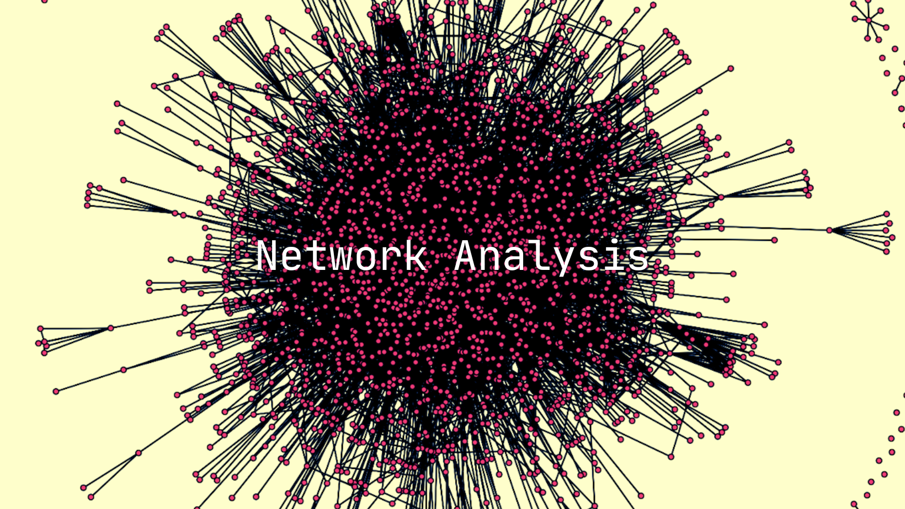
DISCLAIMER:
This are personal notes taken while following the lesson of the course in Network Analytics, EM 1422, at Ca’ Foscari University of Venice. Any mistake made is mine: as you might expect, student notes are not peer reviewed and/or endorsed as official materials. I do not own any rights on this material. Feel free to write me at solar-san@pm.me if you spot mistakes or have any suggestions. The source code is freely available at GitHub.com. Please share, comment, and leave a star if you use these notes!
- Most of the
Rcode is taken from the required textbook, Analyzing Social Networks usingR. The companion website contains useful resources and all code can be retrieved from the companion website. - The pictures and tables in the Centrality and Dyadic sections are taken from prof. Giorgia Minello materials for a course about networks.
A special thanks to prof. Righi, for this awesome course and for allowing me to make this material freely available online.
The final project for this course is available at this link.
Intro: Network Theory
First and foremost: network theory is a interdisciplinary science that can be applied in a wide variety of contexts and disciplines, such as archaeology, engineering, social sciences, biology. Networks have properties encoded in their structure that limit or enhance their behaviour.
Measure: it regards information and how it moves across a network. Everything interesting about networks consists in the flow of information: it is therefore of primary interest for social scientists.
For sufficiently small networks, plotting is an essential first step in its analysis; for large networks, only statistical representations are possible.
The point of arrival is to be able to compute p-values (null networks) and meaningful regressions (econometric of networks) on networks.
What is a network?
It is an abstract representation of interactions between discrete (separated from each others) entities. It is then a model: a simplification of reality.
These entities are represented as nodes: we abstract from any not important characteristics of these entities and conceptualize them as points. These nodes can be connected; such connections are conceptualized by ties or edges. These can be of many different classes or types (e.g.: reciprocated or not).
Ties and nodes can have a set of attributes; they do not concern the network itself, but are nonetheless characteristics of them. They can be anyhow interesting, even as influences and determinants of the strength, presence or other features of network relations and nodes behaviour.
We are modelling complex systems: we first need to know how their components interact with each other. A network is a catalogue of a system components (nodes, vertices) and the interaction between them (link, edges). The two main features in such a model are attributes and networks. These characteristics are intertwined in complex way. How much of the behaviour causes the network and how much of the behaviour is caused by the network?
In other words, is it the network itself that causes a behaviour, or is the behaviour of the individuals that creates the network?
Networks and complex systems
What is a complex system? It is a system made of many heterogeneous interacting components.
Networks are a very efficient way to model such a system; however, heterogeneity might pose challenges while modelling using networks. Networks are important when the connection between their discrete elements is not trivial and cannot be expressed by using simple patterns or other mathematical models: complex networks have emerging behaviour, which cannot be expressed as a simple aggregate/pattern between its components.
These complex interconnections lead to fragility: a single point of failure might impact the whole network in unexpected ways, causing a chain of events affecting every interconnected node. There is a fallout effect that can propagate in unexpected ways, which can have serious consequences.
Fragility: small events that seem to impact a small subset of the network can have profound consequences on the whole system, reverberating and cascading through the connections between nodes.
Failures and behaviour can be modelled by a set of rules, with the aim to predict and forecast. Fragility is a strong issue: if not taken in account, the models are completely useless for predicting and understanding a complex behaviour. In a network, each stress point might reverberate throughout the whole system, causing system-wide breakdowns.
Economic thought is built, classically, on two concepts:
- Centralized markets.
- Games among few people with fixed rules, structures and identities.
However, there are many economic interactions where the social context is not a second-order consideration, but is actually a primary driver of behaviours and outcomes, such as trading and exchanging goods and services. Interactions are rarely anonymous, who you interact with is relevant for behaviour and outcomes: e.g., the position of a person in a social network matters for micro outcomes; frequently, the topology of interactions determines the macro outcomes of the system.
Mapping nodes is a fundamental tool to understand and model them: by mapping nodes and connections, weighting the flow of information between them, it is possible to see that most of the times there are patterns emerging. In other words, networks are mostly not random.
There are many types of networks/graphs depending on their edges:
- undirected graph: represents symmetric relationships. The existence of a relationship between A and B implies a relationship between B and A.
- directed graph: represents asymmetric relationships (e.g.: paper A cites B; the inverse is usually not true).
A network is called directed (or digraph) if all of its links are directed.; it is called undirected if all of its links are undirected. Some networks can have simultaneously both types of links.
non-weighted graph: where edges are weighted equally.
weighted graph: where edges are weighted differently (e.g.: trade networks).
signed networks: where edges can have positive or negative valence.
multi-layer networks: in which the same entities can have multiple types of relationships (e.g.: family and friends).
hyper-networks: networks in which edges connect more than two vertices.
This course mainly studies undirected non-weighted single-layer graphs/networks.
Graph & Networks
- {Network, node, link}: refers to a real system.
- {Graph, vertex, edge}: mathematical representation of a network.
Basic networks parameters are:
- The number of nodes, or . Represents the number of components of the system. It is often called the size of the network.
- To distinguish them, nodes are labelled: .
- A key characteristic of each node is its degree, representing the number of links it has to other nodes.
- The number of links, or , represents the number of interactions between the nodes.
- They are rarely labelled, as they can be identified through the nodes they connect.
- In an undirected network, the total number of links can be expressed as the sum of the node degrees: The corrects for the fact that in the sum each link is counted twice.
- In a directed network, instead:
The average degree for an undirected network is;
The average degree for a directed network is:
In directed networks it is important to distinguish between:
- incoming degree, : number of nodes that point to node .
- outgoing degree, : number of nodes that point from node to other nodes.
- node total degree, :
Graphs: graphs are a mathematical concept defined as a set of:
- set of vertices (V).
- set of edges (E) between vertices.
It is then a set composed of two subsets. It is a mathematical definition: graphs is the specialistic term, while network is used more generally in other disciplines. They can also include:
- attributes of vertices and edges.
The degree distribution provides the probability that a randomly selected node in the network has degree k. For a network with nodes, the degree distribution is the normalised histogram given by: where is the number of degree- nodes. The calculation of most network properties requires to know . The average degree of a network can be re-written as:
The functional form of determines many network phenomena.
Computational representations of a network
Simply drawing graphs does not allow to perform computations on them. We need a compact syntax that also allows to perform mathematics on them. The most common representations are:
- Adjacency matrix: a square matrix, where each element of the matrix indicates whether the pairs of vertices are adjacent in the network (e.g. directly connected).
- Adjacency list/Edge list: a list with two columns, one indicating the point of departure and one the point of arrival of a tie. A third column might be added to indicate the weight associated to each tie.
- Node list: for each note, the list of its connections is reported.
Adjacency matrix:
The adjacency matrix allows to keep track of its links by providing a complete list of them. The adjacency matrix for a network of nodes as rows and columns.
This kind of matrix can have only values 1 or 0 if we are dealing with an unweighed network; moreover, it is a symmetric matrix (links are reciprocated). In case of a undirected network, the matrix is asymmetric while edges can as well either have value 0 or 1 (or NA); the order is important: rows and columns are symmetric and must be ordered in the same way (e.g.: if row 3 contains data about node A its links, then column 3 must contain the same data and be about node A).
The degree of node can be obtained directly from the elements of the adjacency matrix. For undirected networks: It is then a sum over either the rows or the columns of the matrix.
Given that in an undirected network the number of outgoing links equal the number of incoming links, we have: In other words, the number of non-zero elements of the adjacency matrix is , or twice the number of links.
For directed networks, the sum over the adjacency matrix row and columns provide either the incoming or out coming degrees:
- Advantages:
- Systematic representation of all ties, in a compact form.
- Algebra can be applied.
- Disadvantages:
- If the network is sparse (few connections are active), a lot of space is occupied by useless zeros (representing no ties).
- No empty cells can be left in the matrix, otherwise programming languages might misinterpret data.
- We necessarily need square matrices.
- Need to check if:
- If the network is undirected: is the matrix symmetrical?
- Are self nominations possible? Otherwise, the diagonal must contains only 0s.
- Are labels used unique and avoid special characters?
Edge list
- Advantages:
- Saves computational resources.
- Easy to read through.
- Disadvantages:
- Matrix algebra cannot be applied directly.
- Need to check if:
- The datasets contains 2/3 lines.
- Isolates are excluded and will need to be added manually.
- Check that both direction of ties (in directed networks) are present in the list if relevant.
- Are names/labels used short and without special characters?
Node list:
- Advantages:
- Saves computational resources.
- Disadvantages:
- Matrix algebra cannot be applied directly.
- Sometimes slower for large networks.
- Requires more complex data structures (lists).
- Need to check if:
- Are isolates included with an empty line?
- Is the first column the name of the node or of the first connection?
- Did I include links in both the sender and the receiver list in undirected lists?
- Are names/labels used short and without special characters?
Subgraphs
Other meaningful definitions:
Network size: the number of nodes (statistical physics/theory of complex networks).
Density of a network: number of its edges divided by the total number of possible pair of nodes (which is the maximum number of links that could possibly exist in the network).
- A network is a subgraph of network if .
- A complete network is a network that contains all the possible links between its nodes and has therefore density .
- Clique: it is a complete subgraph in which all the possible ties are formed.
Networks in R
These are the packages required to work with networks in R:
To operate with adjacency matrix we need to convert each loaded files into an array. Before creating a project, it’s good practice to compute all the data manipulations necessary.
Friends <- read.csv(
paste0(
files_path,
"Friends.csv"
),
header = T,
sep = ";",
row.names = 1) |>
as.matrix()
Friends Ana Ella Isra Petr Sam
Ana 0 2 1 3 2
Ella 1 0 3 1 3
Isra 3 1 0 2 1
Petr 2 1 2 0 1
Sam 3 2 1 1 0To work with a network project, we use the command xCreateProject.
SmallProject <-
xCreateProject(GeneralDescription = "A small 5 people study", #description of the project
NetworkName = "Friends", #name of the network
References = "", #needed to put citations or references
NETFILE = Friends, #name of the data file
FileType = "Robject", #type of the file
InFormatType = "AdjMat", #format of the file. In this case, adjacency matrix
NetworkDescription="Friendship networks among 5 people with 3=Good friend, 2=Friend and 1=Acquaintance",
Mode = c("People"), #type of nodes; cells, persons, firms, ...
Directed = T,
Loops = F,
Values = "Ordinal",
Class = "matrix"
)
------ FUNCTION: xCreateProject ---------------------------
- Basic checks performed on the argument for "xCreateProject".
- Data imported: [ 0 1 3 2 3 2 0 1 1 2 1 3 0 2 1 3 1 2 0 1 2 3 1 1 0 ] and named as: [ Friends ]
---------------------------------------------------------------With network projects you need to have a complex data structure in which to store all the information needed to describe it. This becomes especially relevant when working with big projects.
To access the adjacency matrix:
SmallProject$Friends Ana Ella Isra Petr Sam
Ana 0 2 1 3 2
Ella 1 0 3 1 3
Isra 3 1 0 2 1
Petr 2 1 2 0 1
Sam 3 2 1 1 0To attach attributes to your network:
Attributes <- read.csv(
paste0(
files_path,
"Attributes.csv"
),
header = T,
sep = ";",
row.names = 1
)
SmallProject <-
xAddAttributesToProject(
ProjectName = SmallProject,
ATTFILE1 = Attributes,
FileType = "Robject",
Mode = c("People"),
AttributesDescription = c(
'Age in years', 'Gender (1 = Male, 2 = Female")', "Preferred Music"
)
)
------ FUNCTION: xAddAttributesToProject ---------------------------
Getting "dataproject" with name [SmallProject].
Attribute file [Attributes] imported**FUNDAMENTAL: network attributes might be stored in a
dataframe(adjacency matrices must be stored as arrays instead*).**
SmallProject$Attributes NodeName Age Gender Music
1 Ana 23 1 Reggae
2 Ella 67 1 Rock
3 Isra 45 1 Pop
4 Petr 28 2 Reggae
5 Sam 33 2 PopCalling the project object prints data frames with all the relevant informations:
SmallProject$ProjectInfo
$ProjectInfo$GeneralDescription
[1] "A small 5 people study"
$ProjectInfo$Modes
[1] "People"
$ProjectInfo$AttributesDescription
Variable Mode Details
1 NodeName People Names of the nodes for mode People
2 Age People Age in years
3 Gender People Gender (1 = Male, 2 = Female")
4 Music People Preferred Music
$ProjectInfo$NetworksDescription
NetworkName
1 Friends
Details
1 Friendship networks among 5 people with 3=Good friend, 2=Friend and 1=Acquaintance
$ProjectInfo$References
[1] ""
$Attributes
NodeName Age Gender Music
1 Ana 23 1 Reggae
2 Ella 67 1 Rock
3 Isra 45 1 Pop
4 Petr 28 2 Reggae
5 Sam 33 2 Pop
$NetworkInfo
NetworkName ModeSender ModeReceiver Directed Loops Values Class
1 Friends People People TRUE FALSE Ordinal matrix
$Friends
Ana Ella Isra Petr Sam
Ana 0 2 1 3 2
Ella 1 0 3 1 3
Isra 3 1 0 2 1
Petr 2 1 2 0 1
Sam 3 2 1 1 0We now want to add another network to an existing project:
Communication <- read.csv(
paste0(files_path, "communication.csv"),
header = T,
sep = ";",
row.names = 1
) |>
as.matrix()
SmallProject<-xAddToProject(ProjectName=SmallProject,
NetworkName="Communication",
NETFILE1=Communication,
FileType="Robject",
NetworkDescription="Communication network",
Mode=c("People"),
Directed=FALSE,
Loops=FALSE,
Values="Binary",
Class="matrix")
------ FUNCTION: xAddToProject ---------------------------
ProjectName: SmallProjectNumber of existing networks: 1
NetworkName: Communication
- Basic checks performed on the argument for "xAddToProject".
- Data imported: [ 0 1 0 1 1 1 0 0 1 0 0 0 0 1 0 1 1 1 0 1 1 0 0 1 0 ] and named: [ Communication ]
---------------------------------------------------------------Friends is a valued network, we can dichotomized it by using:
dichotomized_friend_network <- xDichotomize(
SmallProject$Friends,
Value=1,
Type="GT"
)
dichotomized_friend_network Ana Ella Isra Petr Sam
Ana 0 1 0 1 1
Ella 0 0 1 0 1
Isra 1 0 0 1 0
Petr 1 0 1 0 0
Sam 1 1 0 0 0The density is an important statistic to describe a network:
density_of_communication<-xDensity(dichotomized_friend_network)
. ------------------------------------------------------------------
. Number of valid cells: 20
. which corresponds to: 100 % of considered cells.
. ------------------------------------------------------------------ To reverse the direction of each tie of a network, you simply need to transpose the adjacency matrix.
IsFriendOf<-xTranspose(SmallProject$Friends)
IsFriendOf Ana Ella Isra Petr Sam
Ana 0 1 3 2 3
Ella 2 0 1 1 2
Isra 1 3 0 2 1
Petr 3 1 2 0 1
Sam 2 3 1 1 0For the following part, we switch to the BakerJournals network:
Baker_Journals$ProjectInfo
$ProjectInfo$ProjectName
[1] "Baker_Journals"
$ProjectInfo$GeneralDescription
[1] "Donald Baker collected data on the citations among 20 social work journals for 1985-1986. The data consist of the number of citations from articles in one journal to articles in another journal. Using hierarchical cluster analysis, he found that the network seems to have a core-periphery structure, and argues that American journals tend to be less likely to involve international literature."
$ProjectInfo$AttributesDescription
NULL
$ProjectInfo$NetworksDescription
[1] "Citations: Number of citations"
$ProjectInfo$References
[1] "Baker, D. R. (1992). A Structural Analysis of Social Work Journal Network: 1985-1986. Journal of Social Service Research, 15(3-4), 153-168."
$Attributes
NULL
$NetworkInfo
Name Mode Directed Diagonal Values Class
1 Citations A TRUE FALSE Ratio matrix
$CoCitations
AMH ASW BJSW CAN CCQ CSWJ CW CYSR FR IJSW JGSW JSP JSWE PW SCW SSR SW
AMH 13 0 0 0 0 0 0 0 0 0 0 0 0 0 0 0 3
ASW 0 70 0 0 0 0 0 0 0 0 0 0 18 13 0 21 73
BJSW 0 0 95 0 0 0 0 0 0 0 0 0 13 0 0 0 19
CAN 0 0 0 109 0 0 9 0 0 0 0 0 0 0 6 0 8
CCQ 0 0 0 0 92 0 12 0 0 0 0 0 0 0 3 0 0
CSWJ 0 0 0 0 0 40 0 0 0 0 0 0 0 0 41 20 45
CW 0 0 0 7 0 0 187 6 0 0 0 0 11 7 32 10 58
CYSR 0 0 0 12 5 0 70 26 4 0 0 0 0 6 8 14 28
FR 0 0 0 0 0 0 0 0 205 0 0 0 0 0 18 0 9
IJSW 0 0 0 0 0 0 0 0 0 6 0 0 0 0 0 0 3
JGSW 0 0 0 0 0 0 0 0 0 0 9 0 0 0 18 0 18
JSP 0 0 0 0 0 0 0 0 0 0 0 35 0 0 0 7 0
JSWE 0 9 0 0 0 0 0 0 0 0 0 0 104 0 18 16 58
PW 0 0 0 7 0 0 4 0 0 0 0 0 0 9 0 0 0
SCW 0 8 0 6 0 8 17 0 6 0 6 0 21 0 149 36 124
SSR 0 7 0 0 0 0 17 0 0 0 0 0 9 0 30 105 106
SW 0 15 0 0 0 0 52 0 9 0 0 0 33 19 58 63 366
SWG 0 0 2 0 0 0 0 0 0 0 0 0 9 0 9 7 40
SWHC 0 0 0 0 0 0 0 0 0 0 0 0 0 0 20 0 26
SWRA 0 0 0 0 0 0 8 0 0 0 0 0 24 0 8 39 44
SWG SWHC SWRA
AMH 0 0 0
ASW 0 0 7
BJSW 0 0 0
CAN 0 0 0
CCQ 0 0 0
CSWJ 0 0 0
CW 0 0 0
CYSR 0 0 6
FR 0 0 0
IJSW 0 0 0
JGSW 0 0 0
JSP 0 0 0
JSWE 0 7 16
PW 0 0 0
SCW 8 6 18
SSR 0 0 25
SW 15 43 8
SWG 41 9 0
SWHC 0 86 0
SWRA 0 0 40xSymmetrize allows for symmetrization of a network. In this case, we make the network symmetric by setting the value of ties respectively to Max and Min:
xSymmetrize(Baker_Journals$CoCitations, Type = "Max") AMH ASW BJSW CAN CCQ CSWJ CW CYSR FR IJSW JGSW JSP JSWE PW SCW SSR SW
AMH 13 0 0 0 0 0 0 0 0 0 0 0 0 0 0 0 3
ASW 0 70 0 0 0 0 0 0 0 0 0 0 18 13 8 21 73
BJSW 0 0 95 0 0 0 0 0 0 0 0 0 13 0 0 0 19
CAN 0 0 0 109 0 0 9 12 0 0 0 0 0 7 6 0 8
CCQ 0 0 0 0 92 0 12 5 0 0 0 0 0 0 3 0 0
CSWJ 0 0 0 0 0 40 0 0 0 0 0 0 0 0 41 20 45
CW 0 0 0 9 12 0 187 70 0 0 0 0 11 7 32 17 58
CYSR 0 0 0 12 5 0 70 26 4 0 0 0 0 6 8 14 28
FR 0 0 0 0 0 0 0 4 205 0 0 0 0 0 18 0 9
IJSW 0 0 0 0 0 0 0 0 0 6 0 0 0 0 0 0 3
JGSW 0 0 0 0 0 0 0 0 0 0 9 0 0 0 18 0 18
JSP 0 0 0 0 0 0 0 0 0 0 0 35 0 0 0 7 0
JSWE 0 18 13 0 0 0 11 0 0 0 0 0 104 0 21 16 58
PW 0 13 0 7 0 0 7 6 0 0 0 0 0 9 0 0 19
SCW 0 8 0 6 3 41 32 8 18 0 18 0 21 0 149 36 124
SSR 0 21 0 0 0 20 17 14 0 0 0 7 16 0 36 105 106
SW 3 73 19 8 0 45 58 28 9 3 18 0 58 19 124 106 366
SWG 0 0 2 0 0 0 0 0 0 0 0 0 9 0 9 7 40
SWHC 0 0 0 0 0 0 0 0 0 0 0 0 7 0 20 0 43
SWRA 0 7 0 0 0 0 8 6 0 0 0 0 24 0 18 39 44
SWG SWHC SWRA
AMH 0 0 0
ASW 0 0 7
BJSW 2 0 0
CAN 0 0 0
CCQ 0 0 0
CSWJ 0 0 0
CW 0 0 8
CYSR 0 0 6
FR 0 0 0
IJSW 0 0 0
JGSW 0 0 0
JSP 0 0 0
JSWE 9 7 24
PW 0 0 0
SCW 9 20 18
SSR 7 0 39
SW 40 43 44
SWG 41 9 0
SWHC 9 86 0
SWRA 0 0 40xSymmetrize(Baker_Journals$CoCitations, Type = "Min") AMH ASW BJSW CAN CCQ CSWJ CW CYSR FR IJSW JGSW JSP JSWE PW SCW SSR SW
AMH 13 0 0 0 0 0 0 0 0 0 0 0 0 0 0 0 0
ASW 0 70 0 0 0 0 0 0 0 0 0 0 9 0 0 7 15
BJSW 0 0 95 0 0 0 0 0 0 0 0 0 0 0 0 0 0
CAN 0 0 0 109 0 0 7 0 0 0 0 0 0 0 6 0 0
CCQ 0 0 0 0 92 0 0 0 0 0 0 0 0 0 0 0 0
CSWJ 0 0 0 0 0 40 0 0 0 0 0 0 0 0 8 0 0
CW 0 0 0 7 0 0 187 6 0 0 0 0 0 4 17 10 52
CYSR 0 0 0 0 0 0 6 26 0 0 0 0 0 0 0 0 0
FR 0 0 0 0 0 0 0 0 205 0 0 0 0 0 6 0 9
IJSW 0 0 0 0 0 0 0 0 0 6 0 0 0 0 0 0 0
JGSW 0 0 0 0 0 0 0 0 0 0 9 0 0 0 6 0 0
JSP 0 0 0 0 0 0 0 0 0 0 0 35 0 0 0 0 0
JSWE 0 9 0 0 0 0 0 0 0 0 0 0 104 0 18 9 33
PW 0 0 0 0 0 0 4 0 0 0 0 0 0 9 0 0 0
SCW 0 0 0 6 0 8 17 0 6 0 6 0 18 0 149 30 58
SSR 0 7 0 0 0 0 10 0 0 0 0 0 9 0 30 105 63
SW 0 15 0 0 0 0 52 0 9 0 0 0 33 0 58 63 366
SWG 0 0 0 0 0 0 0 0 0 0 0 0 0 0 8 0 15
SWHC 0 0 0 0 0 0 0 0 0 0 0 0 0 0 6 0 26
SWRA 0 0 0 0 0 0 0 0 0 0 0 0 16 0 8 25 8
SWG SWHC SWRA
AMH 0 0 0
ASW 0 0 0
BJSW 0 0 0
CAN 0 0 0
CCQ 0 0 0
CSWJ 0 0 0
CW 0 0 0
CYSR 0 0 0
FR 0 0 0
IJSW 0 0 0
JGSW 0 0 0
JSP 0 0 0
JSWE 0 0 16
PW 0 0 0
SCW 8 6 8
SSR 0 0 25
SW 15 26 8
SWG 41 0 0
SWHC 0 86 0
SWRA 0 0 40To analyse and compare networks a correlation measure is employed. It is necessary to transform then into vectors first:
cor(c(SmallProject$Friends),c(SmallProject$Communication))[1] 0.29116However, in this case, the diagonal is all composed of 0s, which is influencing the computations. This is caused by the fact that in this network people cannot be in a relationship with themselves; then, it is necessary to transform them into NA.
T1 <- SmallProject$Friends
diag(T1) <- NA
T2 <- SmallProject$Communication
diag(T2) <- NA
cor(c(T1),c(T2),use="complete.obs")[1] -0.07537784Another interesting computation is to take attributes of a network nodes and transform then into another separated network: in this example, we are playing with the age attributes and we are interested in its absolute difference among individuals.
agediff <- xAttributeToNetwork(SmallProject$Attributes[,2], Type = "AbsDiff")*1
xNormalize(agediff, Type = "Max") [,1] [,2] [,3] [,4] [,5]
[1,] 0.0000000 1 0.5000000 0.1136364 0.2272727
[2,] 1.0000000 0 0.5000000 0.8863636 0.7727273
[3,] 1.0000000 1 0.0000000 0.7727273 0.5454545
[4,] 0.1282051 1 0.4358974 0.0000000 0.1282051
[5,] 0.2941176 1 0.3529412 0.1470588 0.0000000The xNormalize network can help with dichotomize, because it allows you to spot the natural cut-off point in your data.
The shortest path among nodes (geodesic distance) can be computed with:
xGeodesicDistance(SmallProject$Communication) Ana Ella Isra Petr Sam
Ana 0 1 2 1 1
Ella 1 0 2 1 2
Isra 2 2 0 1 2
Petr 1 1 1 0 1
Sam 1 2 2 1 0Each matrix element represent the distance among the network nodes. In this networks, for example, you need to cross two different ties to move from Ella to Isra.
To store your project for later use:
save(SmallProject, file = paste0(files_path, "ClassProject.RData"))To work with the sna library, you can convert your project by calling the as.network function:
snafile.n <- as.network(SmallProject$Friends, directed = TRUE)
snafile.n Network attributes:
vertices = 5
directed = TRUE
hyper = FALSE
loops = FALSE
multiple = FALSE
bipartite = FALSE
total edges= 20
missing edges= 0
non-missing edges= 20
Vertex attribute names:
vertex.names
No edge attributesWith igraph, instead, call graph_from_adjacency_matrix:
igraph_file.i <- graph_from_adjacency_matrix(SmallProject$Friends,
mode = c("directed"), diag = FALSE)
igraph_file.iIGRAPH 0f0edc5 DN-- 5 36 --
+ attr: name (v/c)
+ edges from 0f0edc5 (vertex names):
[1] Ana ->Ella Ana ->Ella Ana ->Isra Ana ->Petr Ana ->Petr Ana ->Petr
[7] Ana ->Sam Ana ->Sam Ella->Ana Ella->Isra Ella->Isra Ella->Isra
[13] Ella->Petr Ella->Sam Ella->Sam Ella->Sam Isra->Ana Isra->Ana
[19] Isra->Ana Isra->Ella Isra->Petr Isra->Petr Isra->Sam Petr->Ana
[25] Petr->Ana Petr->Ella Petr->Isra Petr->Isra Petr->Sam Sam ->Ana
[31] Sam ->Ana Sam ->Ana Sam ->Ella Sam ->Ella Sam ->Isra Sam ->PetrHow to work with edge lists
xUCINET can import only adjacency matrices; a workaround could the following:
hp5edges <- read.table(
paste0(
files_path, 'Friends_edgelist.csv'
),
sep = ';',
header = F
)
hp5edges |> head() V1 V2 V3
1 Ana Ella 2
2 Ana Isra 1
3 Ana Petr 3
4 Ana Sam 2
5 Ella Ana 1
6 Ella Isra 3After some data preparation, the code is quite straightforward:
colnames(hp5edges) <- c("from","to","w")
hp5edgesmat <- as.matrix(hp5edges) #igraph wants our data in matrix format
hp5net <- graph_from_edgelist(hp5edgesmat[,1:2], directed=TRUE)
MyAdj <- as_adjacency_matrix(
hp5net,
type = c("both"),
attr = NULL,
names = TRUE,
sparse = FALSE
)One of the most used tools to visualize network is called Pajek, which needs the igraph library to work. It is essentially a list of nodes and edges.
yeast_igraph <- read_graph(
paste0(
files_path, 'YeastS.net'
),
format = c("pajek")
) |>
as_adjacency_matrix(type= 'both', attr = NULL, names = T, sparse = F)A classic visualization of a complex network is:
par(mar= c(0, 0, 0, 0))
gplot(yeast_igraph, gmode = 'graph')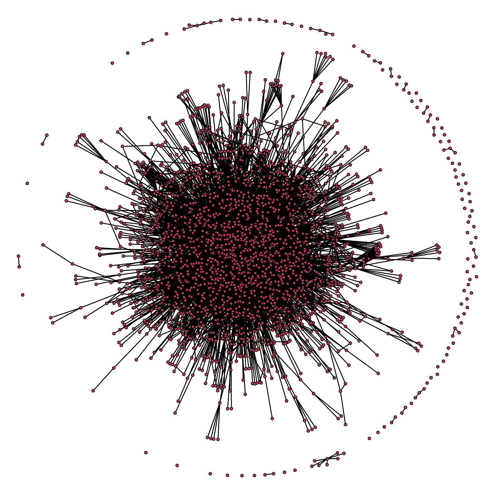
Data visualization: how to study networks
After importing data in R to build a project, we can start to study it: there are two different approaches.
- Data visualization: observing a network and organizing it can lead to insights about its dynamic and the underlying complex system.
- It often works properly only for small networks, with 10-100 nodes and a few edges.
- Statistical properties: they characterize the structure of the network and are useful to abstract from the present cases to create models of networks structures and compare different networks.
- It is the best method to deal with large networks.
In visualizing a network the position in which we place the nodes relative to each other is important to obtain clarity. There are many options: these methods are useful to associate position and information.
- Create a circle of equally separated nodes. This is usually the first approach.
- Use a categorical attribute to plot clusters similar nodes.
- Use a continuous attribute to assign them a coordinate in the visualization space.
- Optimizing node locations according to some algorithms; in this case, the aim is to enhance visualization and avoid overlapping.
When using a weighted network, dichotomization is essential to achieve a meaningful visualization. Remember that setting the dichotomization level is a fundamental aspect of studying a network and the optimal level depends on the task at hand.
Optimization algorithms
The two most used algorithm, used when the position of the nodes is not relevant to the analysis and we want to have a clear representation of a network are:
- Fruchterman and Reingold (1991)
It considers the network as a collection of magnets and springs. All the springs exert the same force and all the magnets have the same polarity: the former tend to push each other apart, while the springs keep them together.
The system starts from a random position and you simply wait for the system to reach a level of minimal entropy, or a state of equilibrium. An iterative process is used to determine that state.
The resulting network has ties which have a similar (or equal) length and unconnected nodes are positioned far from each others.
- Kamada Kaway (1989)
Only springs forces are present; geodesic distance is computed and is used to determine the power of the attraction between two pair of nodes.
Again, the system is in equilibrium as it reaches its minimum energy level. The resulting network has densely connected set of nodes placed close to each other.
With either algorithm there is no unique optimal solution, starting from random positions: this means that there might be multiple local minima, some of them undesirable.
Plotting graphs in R
Some information about the dataset (already loaded with xUCINET):
Krackhardt_HighTech$ProjectInfo$ProjectName
[1] "Krackhardt_HighTech."
$GeneralDescription
[1] "These are data collected by David Krackhardt among the managers of a high-tech company. The company manufactured high-tech equipment on the West Coast of the United States and had just over 100 employees with 21 managers. Contains three types of network relations and four attributes."
$AttributesDescription
[1] "Age: the managers age (in years)"
[2] "Tenure: the length of service or tenure (in years)"
[3] "Level: the level in the corporate hierarchy (coded 1=CEO, 2=Vice President, 3=Manager)"
[4] "Department: a nominal coding for the department (coded 1, 2, 3, 4, with the CEO in department 0, i.e., not in a department)"
$NetworksDescription
[1] "Advice: who the manager went to for advice"
[2] "Friendship: who the manager considers a friend"
[3] "ReportTo: whom the manager reported to, taken from company documents"
$References
[1] "Krackhardt D. (1987). Cognitive social structures. Social Networks, 9, 104-134."
[2] "Wasserman S and K Faust (1994). Social Network Analysis: Methods and Applications. Cambridge University Press, Cambridge."First, we want to look at the friendship network:
Krackhardt_HighTech$Friendship A01 A02 A03 A04 A05 A06 A07 A08 A09 A10 A11 A12 A13 A14 A15 A16 A17 A18 A19
A01 0 1 0 1 0 0 0 1 0 0 0 1 0 0 0 1 0 0 0
A02 1 0 0 0 0 0 0 0 0 0 0 0 0 0 0 0 0 1 0
A03 0 0 0 0 0 0 0 0 0 0 0 0 0 1 0 0 0 0 1
A04 1 1 0 0 0 0 0 1 0 0 0 1 0 0 0 1 1 0 0
A05 0 1 0 0 0 0 0 0 1 0 1 0 0 1 0 0 1 0 1
A06 0 1 0 0 0 0 1 0 1 0 0 1 0 0 0 0 1 0 0
A07 0 0 0 0 0 0 0 0 0 0 0 0 0 0 0 0 0 0 0
A08 0 0 0 1 0 0 0 0 0 0 0 0 0 0 0 0 0 0 0
A09 0 0 0 0 0 0 0 0 0 0 0 0 0 0 0 0 0 0 0
A10 0 0 1 0 1 0 0 1 1 0 0 1 0 0 0 1 0 0 0
A11 1 1 1 1 1 0 0 1 1 0 0 1 1 0 1 0 1 1 1
A12 1 0 0 1 0 0 0 0 0 0 0 0 0 0 0 0 1 0 0
A13 0 0 0 0 1 0 0 0 0 0 1 0 0 0 0 0 0 0 0
A14 0 0 0 0 0 0 1 0 0 0 0 0 0 0 1 0 0 0 0
A15 1 0 1 0 1 1 0 0 1 0 1 0 0 1 0 0 0 0 1
A16 1 1 0 0 0 0 0 0 0 0 0 0 0 0 0 0 0 0 0
A17 1 1 1 1 1 1 1 1 1 1 1 1 0 1 1 1 0 0 1
A18 0 1 0 0 0 0 0 0 0 0 0 0 0 0 0 0 0 0 0
A19 1 1 1 0 1 0 0 0 0 0 1 1 0 1 1 0 0 0 0
A20 0 0 0 0 0 0 0 0 0 0 1 0 0 0 0 0 0 1 0
A21 0 1 0 0 0 0 0 0 0 0 0 1 0 0 0 0 1 1 0
A20 A21
A01 0 0
A02 0 1
A03 0 0
A04 0 0
A05 0 1
A06 0 1
A07 0 0
A08 0 0
A09 0 0
A10 1 0
A11 0 0
A12 0 1
A13 0 0
A14 0 0
A15 0 0
A16 0 0
A17 1 1
A18 0 0
A19 1 0
A20 0 0
A21 0 0We first want to symmetrize this network:
#method 1
Krackhardt_HighTech$Friendship_SymMin<-(Krackhardt_HighTech$Friendship)*t(Krackhardt_HighTech$Friendship)
#method 2
Krackhardt_HighTech$Friendship_SymMin2<-xSymmetrize(Krackhardt_HighTech$Friendship,Type="Min")Are they the same?
sum(Krackhardt_HighTech$Friendship_SymMin - Krackhardt_HighTech$Friendship_SymMin2)[1] 0Yep.
Let’s look at all the objects contained in the network data:
names(Krackhardt_HighTech)[1] "ProjectInfo" "Attributes" "NetworkInfo"
[4] "Advice" "Friendship" "ReportTo"
[7] "Friendship_SymMin" "Friendship_SymMin2"We can use the gplot() function in sna to visualize the network, where we specify how the points/nodes should be positioned in the 2-dimensional space. Here we position them in a circle (mode=“circle”):
par(mar = c(0, 0, 0, 0))
gplot(Krackhardt_HighTech$Friendship_SymMin, mode="circle")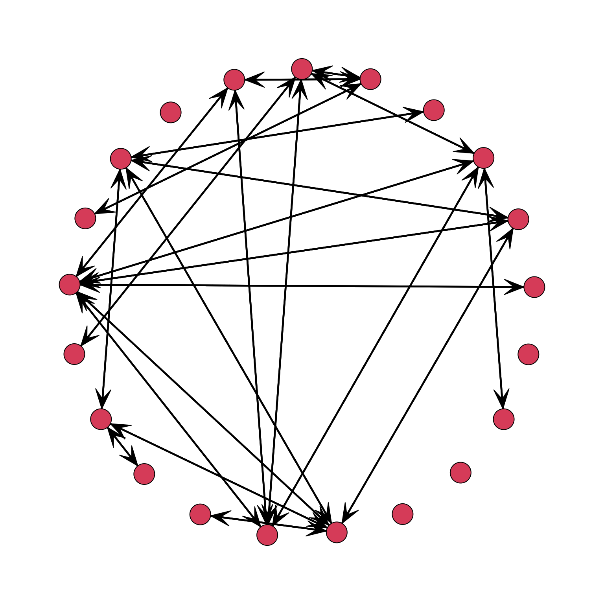
We can immediately see that event though we symmetrized the network, we have a representation of a directed network, even though by construction we do not have built one. We need to specify that we are not working with a directed network, which is the default option:
par(mar = c(0, 0, 0, 0))
gplot(Krackhardt_HighTech$Friendship_SymMin, mode="circle", gmode="graph")gmode helps in solving the issue: the options are + graph: undirected, + digraph (default): directed, + twomode: twomode.
To reduce the dimension of the nodes, we can use the argument vertex.cex:
gplot(Krackhardt_HighTech$Friendship_SymMin, mode="circle", gmode="graph",vertex.cex=.8)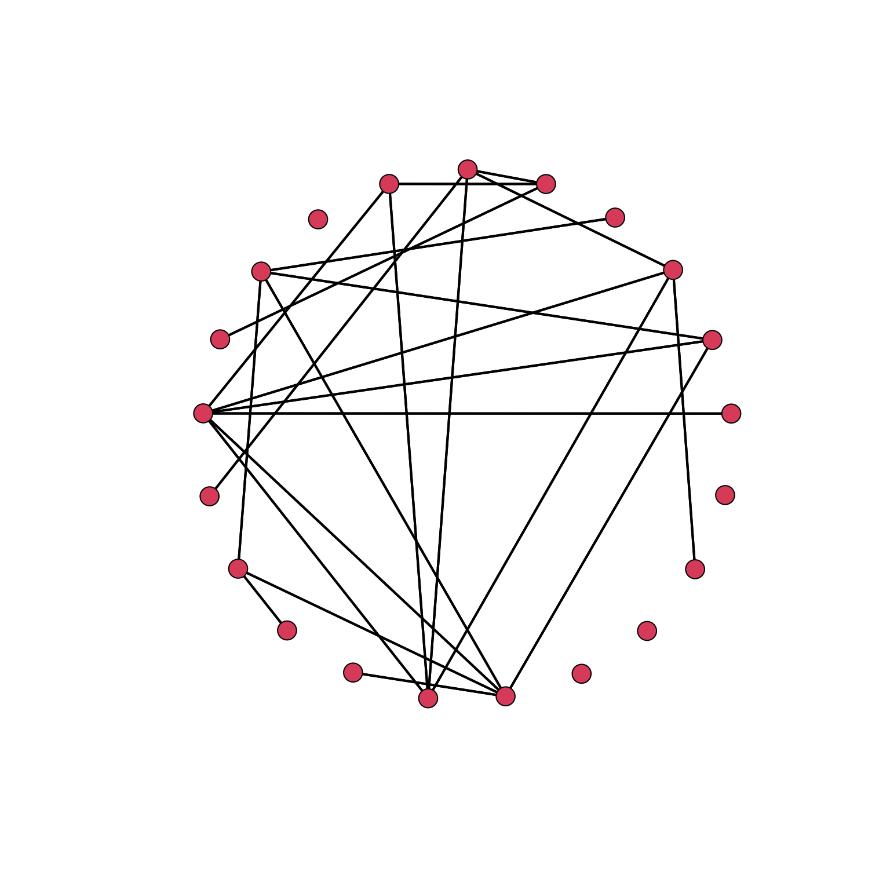
To enhance the visualization, with such a small network, labels can be added to nodes.
par(mar = c(0, 0, 0, 0))
gplot(Krackhardt_HighTech$Friendship_SymMin,
gmode="graph", # type of network: undirected
mode="circle", # how the nodes are positioned
vertex.cex=.8, # the size of the node shapes
displaylabels=TRUE, # to add the node labels
label.pos=1, # to position the labels below the node shapes
label.cex=.8, # to decrease the size of the node labels
edge.col="grey70") # to make the colour of the ties/edges 30% black and 70% white 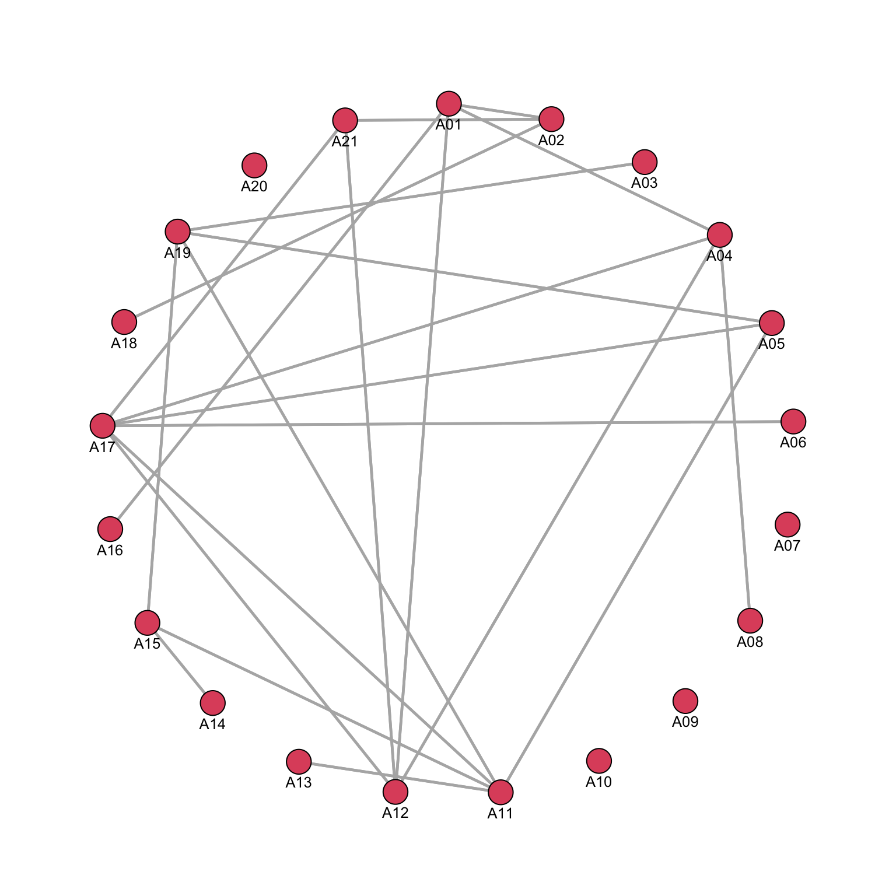
We can already see that while some nodes are particularly connected, some are not: we can also check whether there are some signs of error in our code or in the data, which might require correction of further cleaning.
In this case, while putting nodes in a circle works, we can start to look at different types of visualization.
We will use another database:
par(mar = c(0, 0, 0, 0))
Wolfe_Primates$ProjectInfo$ProjectName
[1] "Wolfe_Primates."
$GeneralDescription
[1] "These data represent 3 months of interactions among a troop of monkeys, observed in the wild by Linda Wolfe as they sported by a river in Ocala, Florida."
$AttributesDescription
[1] "Gender: 1=male, 2=female"
[2] "Age: age in years"
[3] "Rank: rank in the troop, with 1 being highest"
$NetworksDescription
[1] "JointPresence: Joint presence at the river was coded as an interaction and these were summed within all pairs"
[2] "Kinship: Indicates the putative kin relationships among the animals: 18 may be the granddaughter of 19"
$References
NULLThis dataset is useful because we have age and rank which are attributes that might be clearly used to produce an informative visualization.
Wolfe_Primates$Attributes Gender Age Rank
A01 1 15 1
A02 1 10 2
A03 1 10 3
A04 1 8 4
A05 1 7 5
A06 2 15 10
A07 2 5 11
A08 2 11 6
A09 2 8 12
A10 2 9 9
A11 2 16 7
A12 2 10 8
A13 2 14 18
A14 2 5 19
A15 2 7 20
A16 2 11 13
A17 2 7 14
A18 2 5 15
A19 2 15 16
A20 2 4 17Ideally we would like highly ranked individuals on the top of the figure, and then in decreasing order. By default however a rank assign low values to top positions. As a solution, we can reverse the order:
Wolfe_Primates$Attributes<-cbind(Wolfe_Primates$Attributes,Rank_Rev=max(Wolfe_Primates$Attributes[,3])+1-Wolfe_Primates$Attributes$Rank)
Wolfe_Primates$Attributes Gender Age Rank Rank_Rev
A01 1 15 1 20
A02 1 10 2 19
A03 1 10 3 18
A04 1 8 4 17
A05 1 7 5 16
A06 2 15 10 11
A07 2 5 11 10
A08 2 11 6 15
A09 2 8 12 9
A10 2 9 9 12
A11 2 16 7 14
A12 2 10 8 13
A13 2 14 18 3
A14 2 5 19 2
A15 2 7 20 1
A16 2 11 13 8
A17 2 7 14 7
A18 2 5 15 6
A19 2 15 16 5
A20 2 4 17 4The network data are valued and represent how often two monkeys are spotted together:
Wolfe_Primates$JointPresence A01 A02 A03 A04 A05 A06 A07 A08 A09 A10 A11 A12 A13 A14 A15 A16 A17 A18 A19
A01 0 2 10 4 5 5 9 7 4 3 3 7 3 2 5 1 4 1 0
A02 2 0 5 1 3 1 4 2 6 2 5 4 3 2 2 6 3 1 1
A03 10 5 0 8 9 5 11 7 8 8 14 17 9 11 11 5 9 4 6
A04 4 1 8 0 4 0 3 4 2 3 5 3 11 4 7 0 4 3 3
A05 5 3 9 4 0 3 5 7 4 3 5 6 3 4 4 1 2 1 3
A06 5 1 5 0 3 0 5 2 3 2 2 4 4 3 1 1 2 0 1
A07 9 4 11 3 5 5 0 5 4 6 3 9 5 5 4 2 6 3 2
A08 7 2 7 4 7 2 5 0 3 0 3 4 2 1 3 0 1 1 1
A09 4 6 8 2 4 3 4 3 0 1 3 2 4 5 4 3 4 1 3
A10 3 2 8 3 3 2 6 0 1 0 4 7 5 5 7 2 2 3 3
A11 3 5 14 5 5 2 3 3 3 4 0 9 3 4 4 2 4 2 3
A12 7 4 17 3 6 4 9 4 2 7 9 0 7 7 8 3 7 2 4
A13 3 3 9 11 3 4 5 2 4 5 3 7 0 8 11 3 8 2 5
A14 2 2 11 4 4 3 5 1 5 5 4 7 8 0 8 1 5 4 4
A15 5 2 11 7 4 1 4 3 4 7 4 8 11 8 0 2 5 2 2
A16 1 6 5 0 1 1 2 0 3 2 2 3 3 1 2 0 6 1 0
A17 4 3 9 4 2 2 6 1 4 2 4 7 8 5 5 6 0 4 3
A18 1 1 4 3 1 0 3 1 1 3 2 2 2 4 2 1 4 0 2
A19 0 1 6 3 3 1 2 1 3 3 3 4 5 4 2 0 3 2 0
A20 1 1 5 0 3 2 2 0 2 2 1 3 3 1 1 1 3 1 6
A20
A01 1
A02 1
A03 5
A04 0
A05 3
A06 2
A07 2
A08 0
A09 2
A10 2
A11 1
A12 3
A13 3
A14 1
A15 1
A16 1
A17 3
A18 1
A19 6
A20 0This is clearly an undirected network.
If we try to plot it without dichotomizing:
gplot(Wolfe_Primates$JointPresence)
We obtain a very dense network and, without specifying a position for the nodes, they are put at random.
First, we need to find a good dichotomization threshold: 7 co-occurrences seems like a good level. To see why, let’s create a table of the connections:
table(Wolfe_Primates$JointPresence)
0 1 2 3 4 5 6 7 8 9 10 11 14 17
38 52 60 72 58 42 16 20 14 12 2 10 2 2 We are interested only in the most significant connections. The choice has to be made by making a strong theoretical assumption or by a sort of trial-and-error to check whether different thresholds might bring different insights. Be however sure that the results are not correlated with a particular visualization of the data.
par(mar = c(0, 0, 0, 0))
gplot(Wolfe_Primates$JointPresence>6, # NOTE: This is an an alternative way of dichotomizing "on the fly"
gmode="graph", # type of network: undirected
coord=Wolfe_Primates$Attributes[,c(2,4)], # coordinates to be use
vertex.cex=.8, # the size of the node shapes
vertex.col=(Wolfe_Primates$Attributes$Gender==1)*8, # a vector which is used to define the colour of each node (0=white and 8=grey)
displaylabels=TRUE, # to add the node labels
label.pos=1, # to position the labels below the node shapes
label.cex=.7, # to decrease the size of the node labels to 50% of the default
edge.col="grey70") # to make the colour of the ties/edges 30% black and 70% white
arrows(.2, .2, (max(Wolfe_Primates$Attributes$Age)+min(Wolfe_Primates$Attributes$Age))+.2, .2, length = 0.1)
arrows(.2, .2, .2, (max(Wolfe_Primates$Attributes[,2])+min(Wolfe_Primates$Attributes[,2])), length = 0.1)
text(0, (max(Wolfe_Primates$Attributes$Rank)+min(Wolfe_Primates$Attributes$Rank))-.5, labels="Rank",
cex=0.8, pos=4)
text((max(Wolfe_Primates$Attributes$Age)+min(Wolfe_Primates$Attributes$Age)),.2, labels="Age",
cex=0.8, pos=3)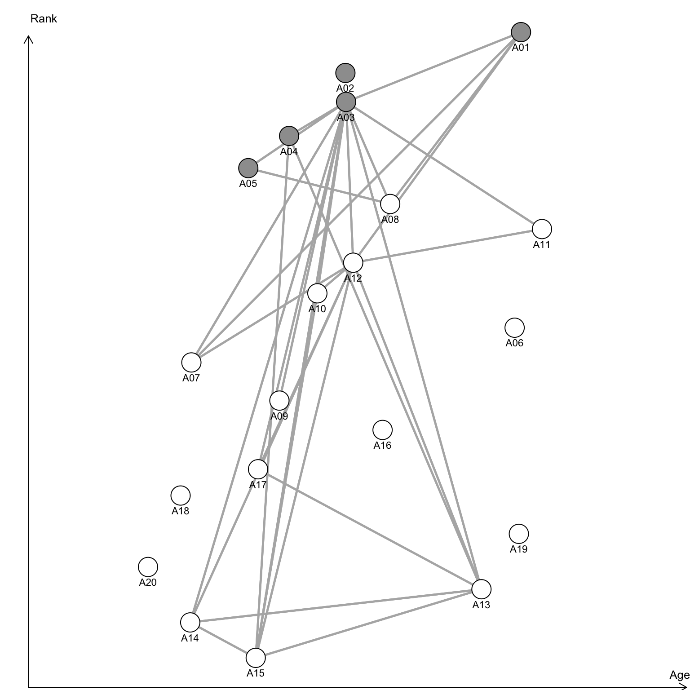
Note that we are using age (y-axis) and rev_Rank (x-axis) as coordinates for nodes. Moreover, node colour is dependent on the gender; this is then a multivariate graphical representation of the graph.
We can see that older males are put on the top of the rank. Rank is correlated with age and gender is fundamental in detemining the position in the rank.
Using a nominal attribute to generate coordinates
We will study the Krackhardt_HighTech: we wish to plot nodes belonging to the same department in the same group. When we want to use a nominal/categorical variable (such as Department) to position those nodes closer to each other who belong to the same category, we will use a trick. The default setting for plotting uses an algorithm that positions nodes close to each other if they are connected (see later). So what if we would create a matrix where we would have a value 1 when two nodes belong to the same category and 0 if they do not and we would use this to generate the positions of the nodes in the figure? We can then use these as coordinates for drawing the nodes in a graph containing the real network.
We first need to generate the matrix containing same department, which we will call MATRIX_A2:
#First, create a matrix with a list of departments
#and copy them in columns.
MATRIX_A1<-matrix(
Krackhardt_HighTech$Attributes$Department,
dim(
Krackhardt_HighTech$Friendship
)[1],
dim(
Krackhardt_HighTech$Friendship
)[1]
)
#if the two values are equal,
#it means that two people are in the same department.
MATRIX_A2<-(MATRIX_A1==t(MATRIX_A1))*1
MATRIX_A2 [,1] [,2] [,3] [,4] [,5] [,6] [,7] [,8] [,9] [,10] [,11] [,12] [,13]
[1,] 1 1 0 1 0 0 0 0 0 0 0 0 0
[2,] 1 1 0 1 0 0 0 0 0 0 0 0 0
[3,] 0 0 1 0 1 0 0 0 1 0 0 0 1
[4,] 1 1 0 1 0 0 0 0 0 0 0 0 0
[5,] 0 0 1 0 1 0 0 0 1 0 0 0 1
[6,] 0 0 0 0 0 1 0 1 0 0 0 1 0
[7,] 0 0 0 0 0 0 1 0 0 0 0 0 0
[8,] 0 0 0 0 0 1 0 1 0 0 0 1 0
[9,] 0 0 1 0 1 0 0 0 1 0 0 0 1
[10,] 0 0 0 0 0 0 0 0 0 1 1 0 0
[11,] 0 0 0 0 0 0 0 0 0 1 1 0 0
[12,] 0 0 0 0 0 1 0 1 0 0 0 1 0
[13,] 0 0 1 0 1 0 0 0 1 0 0 0 1
[14,] 0 0 1 0 1 0 0 0 1 0 0 0 1
[15,] 0 0 1 0 1 0 0 0 1 0 0 0 1
[16,] 1 1 0 1 0 0 0 0 0 0 0 0 0
[17,] 0 0 0 0 0 1 0 1 0 0 0 1 0
[18,] 0 0 0 0 0 0 0 0 0 1 1 0 0
[19,] 0 0 1 0 1 0 0 0 1 0 0 0 1
[20,] 0 0 1 0 1 0 0 0 1 0 0 0 1
[21,] 0 0 0 0 0 1 0 1 0 0 0 1 0
[,14] [,15] [,16] [,17] [,18] [,19] [,20] [,21]
[1,] 0 0 1 0 0 0 0 0
[2,] 0 0 1 0 0 0 0 0
[3,] 1 1 0 0 0 1 1 0
[4,] 0 0 1 0 0 0 0 0
[5,] 1 1 0 0 0 1 1 0
[6,] 0 0 0 1 0 0 0 1
[7,] 0 0 0 0 0 0 0 0
[8,] 0 0 0 1 0 0 0 1
[9,] 1 1 0 0 0 1 1 0
[10,] 0 0 0 0 1 0 0 0
[11,] 0 0 0 0 1 0 0 0
[12,] 0 0 0 1 0 0 0 1
[13,] 1 1 0 0 0 1 1 0
[14,] 1 1 0 0 0 1 1 0
[15,] 1 1 0 0 0 1 1 0
[16,] 0 0 1 0 0 0 0 0
[17,] 0 0 0 1 0 0 0 1
[18,] 0 0 0 0 1 0 0 0
[19,] 1 1 0 0 0 1 1 0
[20,] 1 1 0 0 0 1 1 0
[21,] 0 0 0 1 0 0 0 1We now generate the coordinates using the new matrix MATRIX_A2 and store the coordinates of the graph as a new object (COORD_A2):
COORD_A2 <- gplot(MATRIX_A2)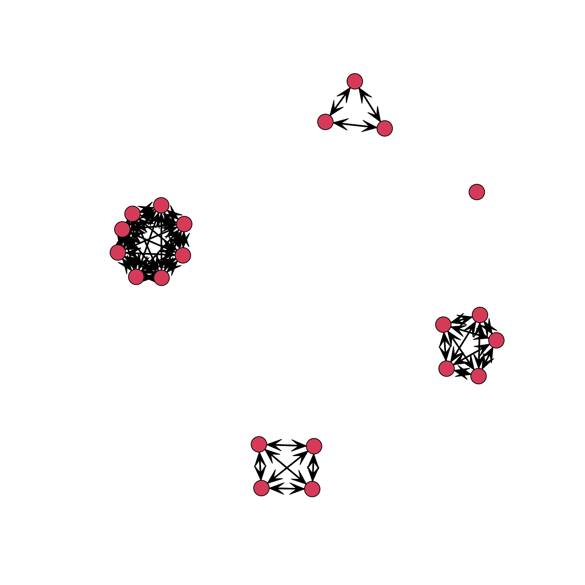
As we can see in the graph, the result is what we wanted: nodes from the same department are positioned close to each other. We now can use these coordinates (stored in the object COORD_A2) in the same way we used two continuous attributes before to define the x and y axes (coord=COORD_A2) and obtain a graph for the friendship network where nodes are positioned according to department:
par(mar = c(0, 0, 0, 0))
gplot((Krackhardt_HighTech$Friendship)*t(Krackhardt_HighTech$Friendship),
gmode="graph",
coord=COORD_A2,
vertex.cex=.8,
displaylabels=TRUE,
label.pos=1,
label.cex=.7,
edge.col="grey70")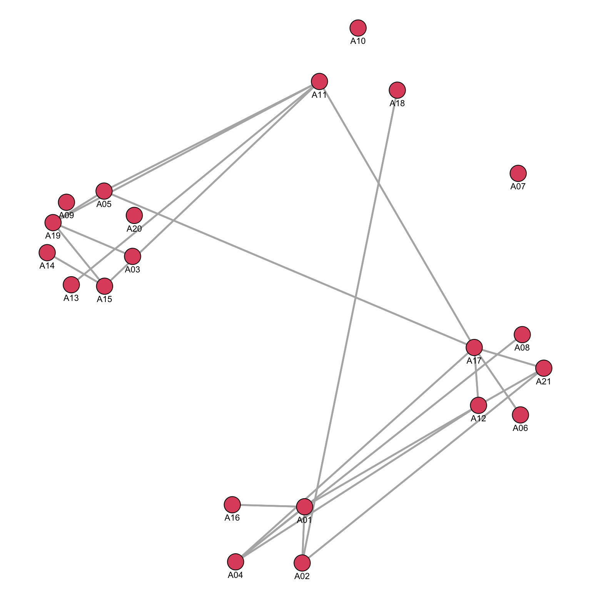
While the nodes did not move, we can now visualize the relationship among departments. For example, we can now see that A11 is a fundamental element in establishing connections among separated departments.
We could use the same approach to plot another network: the advice network.
par(mar = c(0, 0, 0, 0))
gplot((Krackhardt_HighTech$Advice)*t(Krackhardt_HighTech$Advice),
gmode="graph",
coord=COORD_A2,
vertex.cex=.8,
displaylabels=TRUE,
label.pos=1,
label.cex=.7,
edge.col="grey70")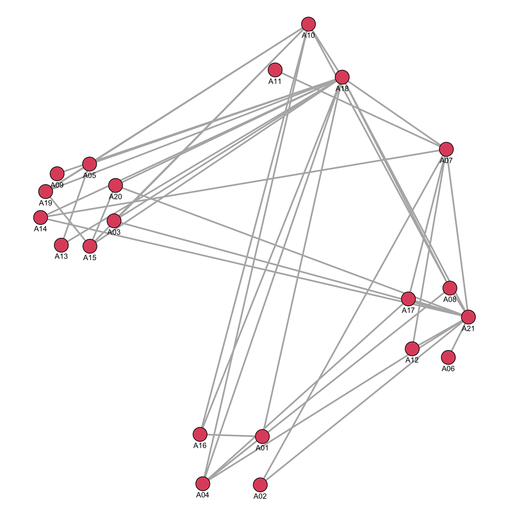
By using the same coordinates, we can compare and contrast the flow of information among different networks.
Plotting with optimization algorithms
Fruchterman and Reingold (1991) is the default in SNA package:
par(mar = c(0, 0, 0, 0))
gplot(ASNR_Fig07x11,
gmode="graph",
vertex.cex=.8,
displaylabels=TRUE,
label.pos=1,
label.cex=.9,
edge.col="grey70")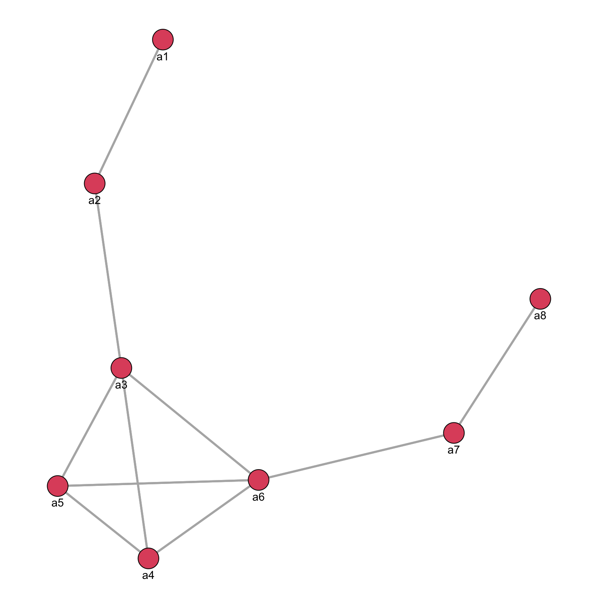
mode="kamadakawai":
par(mar = c(0, 0, 0, 0))
gplot(ASNR_Fig07x11,
mode="kamadakawai",
gmode="graph",
vertex.cex=.8,
displaylabels=TRUE,
label.pos=1,
label.cex=.9,
edge.col="grey70")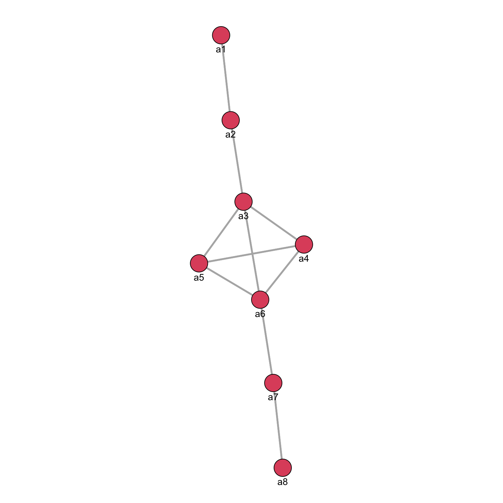
There is not a best algorithm: it all depends on your data and objective.
They usually help with more complex networks:
par(mar = c(0, 0, 0, 0))
gplot(Krackhardt_HighTech$Friendship*t(Krackhardt_HighTech$Friendship),
gmode="graph",
vertex.cex=.8,
displaylabels=TRUE,
label.pos=1,
label.cex=.9,
edge.col="grey70")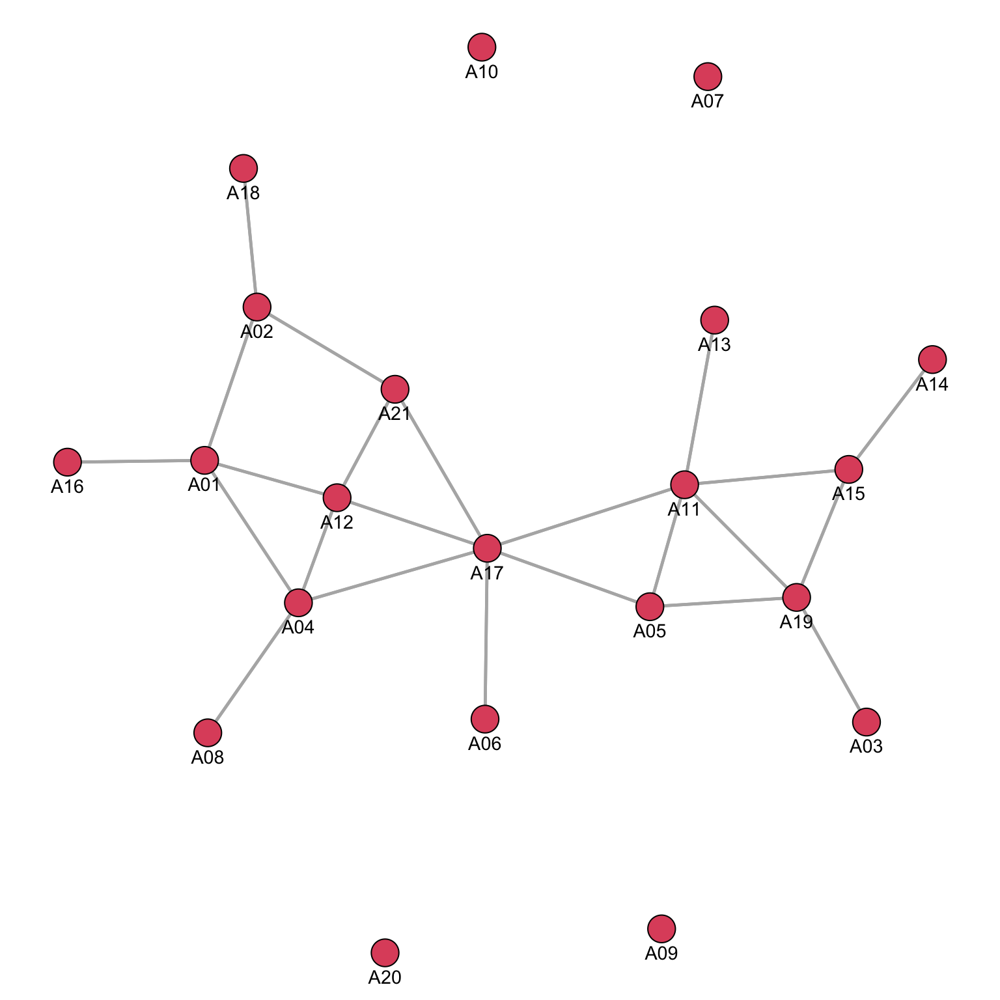
But, with the advice network, visualization is far less useful.
par(mar = c(0, 0, 0, 0))
gplot(Krackhardt_HighTech$Advice*t(Krackhardt_HighTech$Advice),
gmode="graph",
vertex.cex=.8,
displaylabels=TRUE,
label.pos=1,
label.cex=.9,
edge.col="grey70")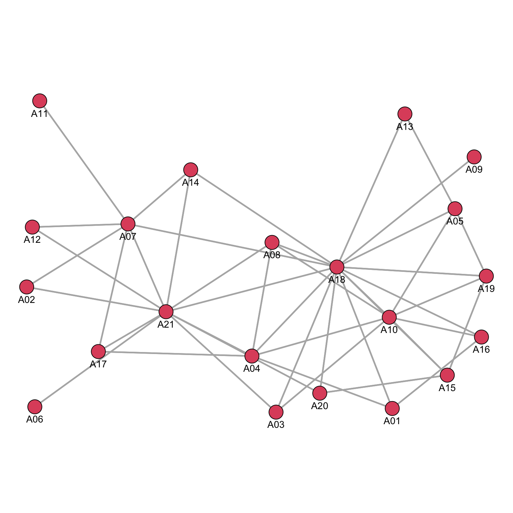
Let’s see an example with a large collaboration network:
par(mar = c(0, 0, 0, 0))
gplot(Borgatti_Scientists504$Collaboration>3,
mode="kamadakawai",
gmode="graph",
vertex.cex=.8,
edge.col="grey70")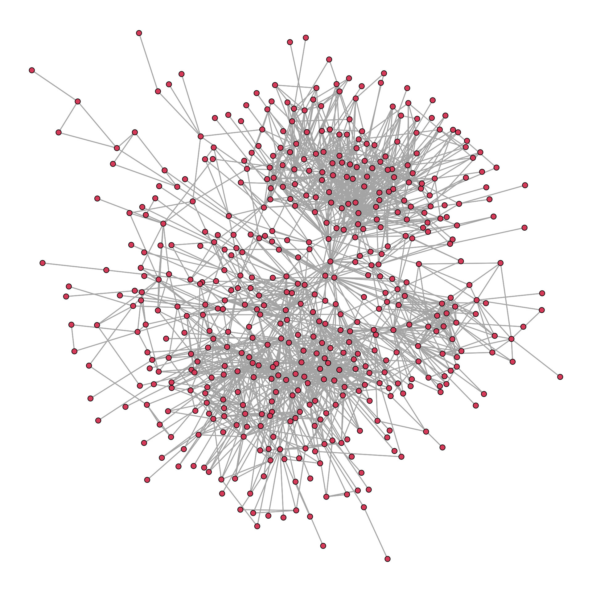
Embedding node attributes
When we analyse a graph visually, we might want to include as much information as possible in the visual representation. There are a few tricks which can be used to include further dimensionality of a graph. We might want to add information about the nodes:
- Shapes
- Size of the dots
- Colours
- Labels (again, size and colour)
par(mar=c(0,0,0,0))
gplot(Krackhardt_HighTech$Friendship_SymMin,
gmode="graph",
edge.col="grey30",
edge.lwd=.4,
vertex.cex=Krackhardt_HighTech$Attributes$Tenure/20+1, # node dimension is dependent on an attribute
vertex.col="white",
displaylabels=TRUE,
label.cex=.8)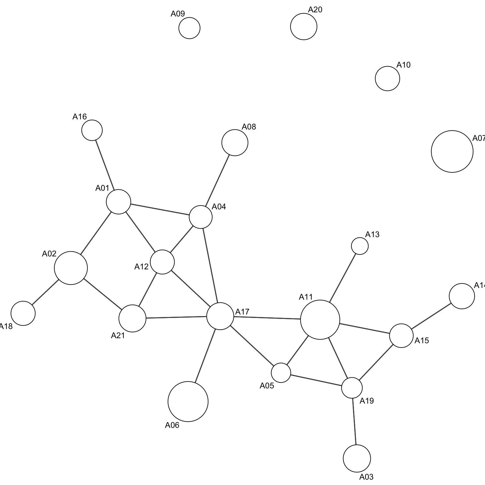
Here, node dimension is a function of the tenure.
Categorical variables can be represented by colours and shapes:
par(mar=c(0,0,0,0))
gplot(Krackhardt_HighTech$Friendship_SymMin,
gmode="graph",
mode="fruchtermanreingold",
jitter=F,
edge.col="grey30",
edge.lwd=.4,
vertex.cex=Krackhardt_HighTech$Attributes$Tenure/20+1,
vertex.col=1+(Krackhardt_HighTech$Attributes$Level==2)+(Krackhardt_HighTech$Attributes$Level==3)*-1,
vertex.sides=3+(Krackhardt_HighTech$Attributes$Level==2)+(Krackhardt_HighTech$Attributes$Level==3)*50,
displaylabels=TRUE,
label.cex=.8)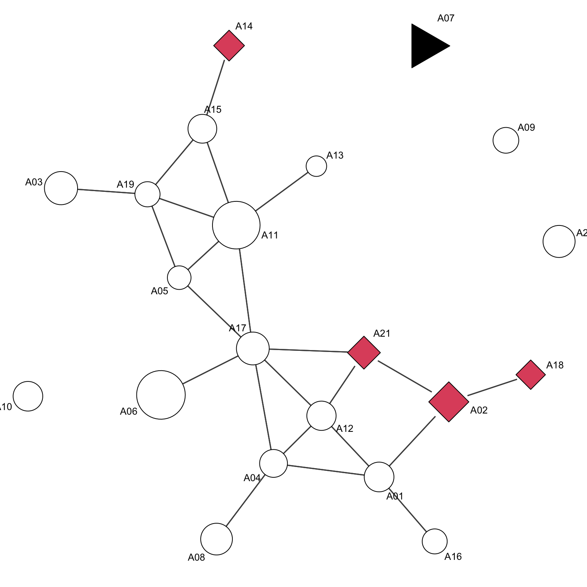
Representing valued networks
A useful computation might consist in adding values to the ties regarding weights. We will use the colorRampPalette to create a palette of colours to visualize information; in our case, we will extract and use tenure years and visualize it.
Tenure <- (Borgatti_Scientists504$Attributes$Years)
# I normalize and discretize the tenure levels between 0 and 10
TenureA <- (round(10*(Tenure)/max((Tenure))))
# return functions that interpolate a set of given colours to create new colour palettes
colfunc <- colorRampPalette(c("yellow", "red"))
COLWB <- colfunc(7)The colorRampPalette takes two values as the extreme of your range of colours and interpolates the intermediate colours in the range. We can assign a colour to each level of the variable:
TenureA2 <- TenureA
TenureA2[TenureA==0] <- COLWB[1]
TenureA2[TenureA==1] <- COLWB[2]
TenureA2[TenureA==2] <- COLWB[3]
TenureA2[TenureA==3] <- COLWB[4]
TenureA2[TenureA==4] <- COLWB[5]
TenureA2[TenureA==5] <- COLWB[6]
TenureA2[TenureA==6] <- COLWB[6]
TenureA2[TenureA==7] <- COLWB[7]
TenureA2[TenureA==8] <- COLWB[7]
TenureA2[TenureA==9] <- COLWB[7]
TenureA2[TenureA==10] <- COLWB[7]We can then plot the graph using the colour to add another dimension to the visualization:
par(mar=c(0,0,0,0))
gplot(Borgatti_Scientists504$Collaboration>3,
mode="kamadakawai",
gmode="graph",
edge.col="grey80",
edge.lwd=.2,
vertex.col=TenureA2,
vertex.cex=1+.7*(2-Borgatti_Scientists504$Attributes$Sex),
vertex.sides=(Borgatti_Scientists504$Attributes$Sex-1)*47+4)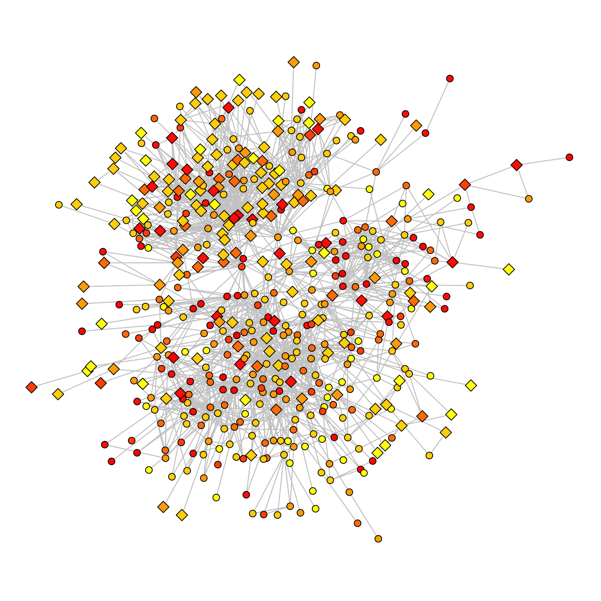
Note that the vertex shapes and sizes show the sex.
Padgett shows that Medici centrality in a series of networks (trade, marriages) explains their raise to power: relying on degree centrality, we can define the size of the labels with label.cex. To increase visibility we removed the node shapes. To compute the degree, we use the sna::degree function, which will in this case return the number of marriages that connects families as the size of the node.
par(mar=c(0,0,0,0))
PFM_Degree<-sna::degree(Padgett_FlorentineFamilies$Marriage)
gplot(Padgett_FlorentineFamilies$Marriage,
gmode="graph",
edge.col="grey80",
edge.lwd=1.2,
vertex.cex=0,
vertex.col="white",
displaylabels=TRUE,
label.pos=5,
label.cex=PFM_Degree/14+.45)To effectively substitute the nodes, they are set with dimension 0, allowing labels to substitute them.
Also ties can represent useful information. In this case ties that go in two directions can be represented as straight lines with two arrows:
par(mar=c(0,0,0,0))
gplot(Newcomb_Fraternity$PreferenceT00<4,
gmode="digraph", # not that we changed the mode
#layout
jitter=F,
#ties
edge.col="grey30",
edge.lwd=1,
arrowhead.cex=.6,
#nodes
vertex.col="gold",
vertex.cex=1.4,
#labels
displaylabels=TRUE,
label.pos=5,
label.cex=.7)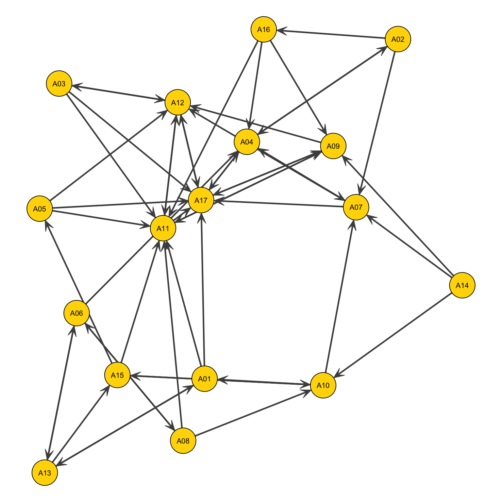
Or by two curvy lines
par(mar=c(0,0,0,0))
gplot(Newcomb_Fraternity$PreferenceT00<4,
gmode="digraph",
#layout
jitter = F,
#ties
edge.col="grey30",
edge.lwd=1,
usecurve=T, # Adding this parameter
edge.curve=.09,
arrowhead.cex=.6,
#nodes
vertex.col="gold",
vertex.cex=1.4,
#labels
displaylabels=TRUE,
label.pos=5,
label.cex=.7)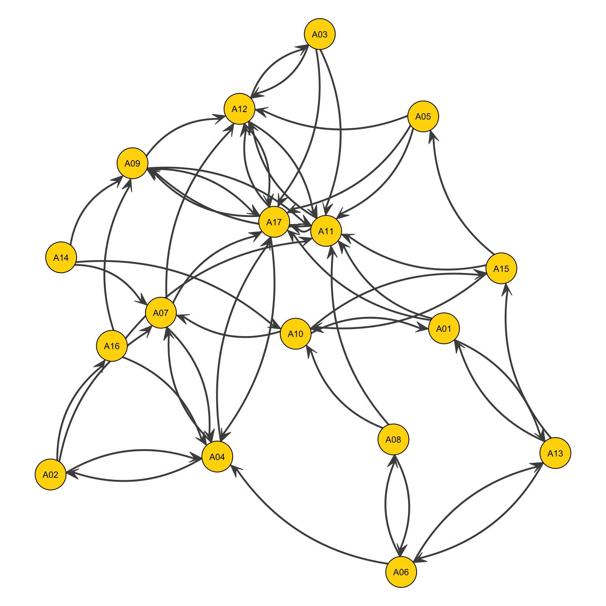
One last thing. Frequently a project requires to plot multiple types of ties in the same network; for example, to represent both antagonistic or friendly relationship among a network of people. This kind of information is usually stored in different networks, which are then stored in different adjacency matrices.
HBG <- Hawthorne_BankWiring$Game # Positive ties
HBA <- Hawthorne_BankWiring$Antagonistic # Negative tiesWe need to rewrite the code so that: if the relation is only positive, it has colour green (3), only negative has colour red (2), while both is black (1).
HB <- (2*HBG+HBA)
HBc <- (HBA==1)*(HBG==1)*1+(HBA==0)*(HBG==1)*3+(HBA==1)*(HBG==0)*2
#Change tie width so it is also visible in black & white
HBl <- (HBA==1)*(HBG==1)*5+(HBA==0)*(HBG==1)*3+(HBA==1)*(HBG==0)*1I am now ready to represent the network:
par(mar=c(0,0,0,0))
gplot(HB, jitter = F, gmode="graph", displaylabels=TRUE, label.pos=5,
vertex.col="grey90", edge.lwd=HBl,
label.cex=.7, vertex.cex=1.4, edge.col=HBc)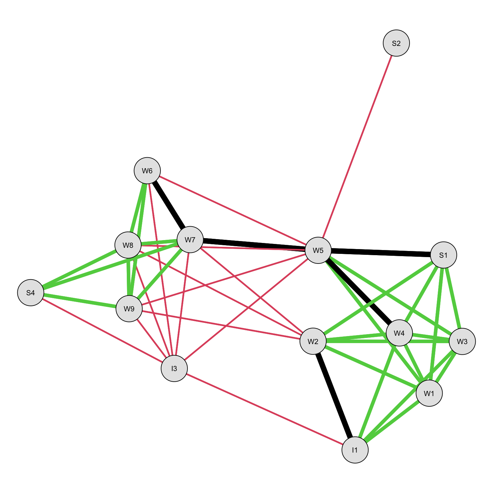
Statistical properties of networks
These statistical properties are used to characterize networks.
- Monadic (e.g. concerning the single nodes):
- degree
- centrality measures
- Dyadic (e.g. concerning the relationship between two nodes):
- path,
- walks,
- connectivity
- That concern groups of nodes:
- connected components
- clustering
- assortativity
- communities
- average shortest path
- diameter
Monadic
We are talking about the characterization of nodes.
We use the degree, : the number of edges incident to a vertex.
- a node with is isolated.
- a node with is a leaf, or terminal node.
- a node with is an hub.
For directed networks:
- In-degree: the number of directed edges that point to a vertex.
- Out-degree: the number of directed edges that start from a vertex.
For undirected, unweighed networks, the degree of a node is the row-sum (or, equivalently, the column-sum) of its rows/columns in the adjacency matrix.
For undirected, weighted networks, the degree of a node is the row-sum (or equivalently the column-sum) of the non-zero elements in its row (or column) in the adjacency matrix.
- Summing the weights on a row (column) we can also get the so-called Node Strength.
For directed networks:
- the out-degree is the row-sum of their row in the adjacency matrix.
- the in-degree is the column-sum of their column in the adjacency matrix.
To compute the degree in R:
xDegreeCentrality(Krackhardt_HighTech$Advice) Degree nDegree
A01 6 0.30
A02 3 0.15
A03 15 0.75
A04 12 0.60
A05 15 0.75
A06 1 0.05
A07 8 0.40
A08 8 0.40
A09 13 0.65
A10 14 0.70
A11 3 0.15
A12 2 0.10
A13 6 0.30
A14 4 0.20
A15 20 1.00
A16 4 0.20
A17 5 0.25
A18 17 0.85
A19 11 0.55
A20 12 0.60
A21 11 0.55This command prints the origin and each degree; moreover, we also have the average strength of the connection of that node associated to it. Note that in undirected network, it automatically computes the out-degree; to obtain the in-degree, we need to first transpose the matrix.
xDegreeCentrality(t(Krackhardt_HighTech$Advice)) Degree nDegree
A01 13 0.65
A02 18 0.90
A03 5 0.25
A04 8 0.40
A05 5 0.25
A06 10 0.50
A07 13 0.65
A08 10 0.50
A09 4 0.20
A10 9 0.45
A11 11 0.55
A12 7 0.35
A13 4 0.20
A14 10 0.50
A15 4 0.20
A16 8 0.40
A17 9 0.45
A18 15 0.75
A19 4 0.20
A20 8 0.40
A21 15 0.75Dyadic
- Walk: a sequence of nodes, where each node is adjacent to the next one.
- The length of a walk is the number of edges in it.
- A walk is closed if its first and last vertices coincide.
- Path: a walk that does not repeat nodes or edges.
Finding properties about these aspects is a really important aspect of characterizing a network.
- Trail: an open walk in which no edge is repeated, but a vertex can be repeated.

- Circuit: is a closed trail in which there are no repeated edges, but we can have repeated nodes, other than the first vertex which should be the same as the last.
- Cycle: is a closed path with at least three edges, that is there are no repeated edges, in which the first and last nodes are the same, but otherwise all nodes are distinct.
- Eulerian path: it is a path that traverses each edge in a network exactly once. If, the starting and ending vertices are the same it is called an Euler circuit (or Euler tour).
- Hamiltonian path: it is a path that visits each vertex exactly once. Hamilton cycles are Hamilton paths that start and stop at the same vertex.
In contrast to Euler tours, there is no known efficient procedure by which one can determine whether a graph is Hamiltonian or not - that makes the issue of (non)Hamiltonian graphs difficult.
Counting paths between nodes
One of the most important characteristic of a network are its paths; we can use the adjacency matrix to compute the number of paths leading from one node to the other. We need to raise it to the power of (length of the path): the number of different paths of length from to (vertices) equals the th entry of , where is a positive integer.
Moreover: if
- there are no walks of length going from to .
- is exactly the number of such walks.
Geodesic Paths
- Geodesic path: a path that is a sequence of vertices connected by edges between vertices and with the fewest possible edges. It is the path between two vertices such that no shorter path exists. A geodesic path is also called a shortest path or a graph geodesic.
There is no geodesic path between two vertices if the vertices are not connected by any route through the network; if so, the geodesic distance is infinite () by convention. Geodesic paths are not necessarily unique as it is possible to have two or more paths of equal length between a given pair of vertices.
- Geodesic distance, also called shortest distance, is the length of the geodesic path. It is the shortest network distance between the vertices in question. In other words, the distance between two vertices in a graph is the number of edges in the shortest path connecting them.
An important measure is the average geodesic distance computed among all the nodes: it can tell you how fast is the flow of information between nodes.
- Average Shortest Path Length: the average number of steps along the shortest paths for all possible pairs of network nodes. It is a measure of the efficiency of information or mass transport on a network.
- Eccentricity: the eccentricity of a vertex is its shortest path distance from the farthest node in the graph.
It tells you the maximum distance that might separate two nodes and tells the average maximum distance that information have to travel to reach the extreme areas of a network.
- Radius: the graph radius is the minimum among all the maximum distances between a vertex to all other vertices. A radius of the graph exists only if it has the diameter.
Distance in Digraphs
In directed graphs each path needs to follow the direction of the arrows. In a digraph the distance from node A to B (on an AB path) is generally different from the distance from node B to A (on a BCA path).
How to find the shortest path?
Graph geodesics may be found using a Breadth-first search or using Dijkstra’s algorithm.
The average shortest path can work as a proxy for the speed at which information travels between nodes and along the network. When we are dealing with bigger graphs, we need methods to solve the problem in an algorithmic view, since visual analysis is not feasible.
Breadth-first search: you start from the node of interest and start exploring the network, moving one node at a time and exploring all nodes in the network.
Dijkstra’s algorithm:
- Mark the ending vertex with a distance of zero. Designate this vertex as current and record the distance in
[]after the vertex name. - Find all vertices leading to the current vertex. Calculate their distances to the end. Since we already know the distance the current vertex, mark the distance to the end (now, current vertex).
- Note that once you visited a node, you do not need to visit it again.
- Move to the vertex with the shortest distance; set is as the starting point, then add its distance to its neighbours.
- Beware that travelling to the same node from different starting point might yield different distances.
- The shortest path will be the one that generated the minimum distance.
- Mark the ending vertex with a distance of zero. Designate this vertex as current and record the distance in
Some remarks about Dijkstra’s algorithm:
- It is an optimal algorithm, meaning that it always produces the actual shortest path.
- It is efficient, meaning that it can be implemented in a reasonable amount of time; in this case, , or the number of nodes.
- It takes around calculations, where is the number of vertices in a graph.
This algorithm is the default choice in R when computing the shortest distance. It is also used to compute the average shortest path.
It is possible that there is no path at all between a given pair of vertices in a network: these are called disconnected networks. The implication is that some areas are not connected to the rest of the network. This property can change over time.
Connected components
The adjacency matrix of a network with several components can be written in a block-diagonal form: all non-zero element are confined in sub-matrices (squares), with all other elements being zero.
The vast majority of real networks host most of their nodes in a single connected component, also known as GCC (Giant Connected Component).
Laplacian Matrix
Or, equivalently, the matrix:
Connectivity
A directed graph is strongly connected if there is a path from a to b and from b to a whenever both are vertices in a graph. A directed graph is weakly connected if there is a path between any two vertices in the underlying undirected graph.
All this indicators and measures will be used to study the statistical properties of networks at scale.
Triadic characteristics
Local clustering: clustering associated with a given individual.
In other words, we are counting and computing all close triads of elements all connected to each other and dividing it by all the connections of a given node (open triads). It is a normalized measure.
The average clustering of a network can also be computed.
Triadic closure
The triadic closure is the tendency, especially in social system, to close triangles. The tendency to connect is stronger among three nodes, if two of them are already connected.
This implies that real social networks tend to have a large number of closed triangles and thus a high average clustering; such effect might be caused by:
- Trust-transitivity.
- Enhanced opportunities
- Decreasing interaction costs.
Triadic balance
A key dynamic process in signed networks: closed triads tend to be stable if they involve an odd number of positive relations. Unbalanced triads tend to evolve to a balanced one, by changing one interaction signs or opening the triad.
It is a very powerful dynamic which shapes the topology of networks.
Assortativity
It measures the tendency of nodes to be connected with other nodes with similar degree.
- Positive assortativity: high degree nodes tend to be connected with high degree nodes (and low degree nodes with low degree nodes).
- Negative assortativity (dissortativity): high degree nodes tend to be connected with low degree nodes.
Social networks are typically assortative, which technological networks dissortative.
It can be quantified using the Pearson coefficient (correlation) of the degrees of adjacent nodes.
The assortativity can be computed only for nodes with a given degree and it is possible to visualize the general tendency of your network in the slope of the following function, which looks at the average nearest neighbour degree of nodes with given degree:
This is equivalent to , which is the conditional probability that an edge of node with degree points to a node with degree .
Computing this variables and statistical measures for different networks allow to create classifications and opens the way for more analysis.
Why are these measures important?
- Average Shortest Path:
- It is a good indication of how fast information, diseases, goods, et. spread in the network.
- Clustering:
- Connected triads are important in social networks.
- In social networks clustering tends to be high, due to triadic closure
- “If A is connected with B and with C it is very likely that B and C are themselves connected with each other”.
- Important social phenomenon happen on triads, e.g. triadic balance:
- “The friend of my friend is my friend”, “The enemy of my enemy is my friend”, “The friend of my enemy is my enemy”
- A triad is balanced if the number of +s is odd.
Centrality
We measure nodes importance using so-called centrality: it is a proxy to capture which are the most important node. It has nothing to do with position in a network. There are different possible definitions, each measure varying by context and purpose. It is a local measure, relative to the rest of the network: it is not expressing a global property.
- Metric for network analysis.
- Element-based.
- It can be used to rank individuals in a network, inducing a centrality ranking on the nodes not based on the nature of the node.
- Topological measure that scores nodes by their importance as a part of the big network.
Centrality measures are widely used:
- You can target central individuals with marketing or other preventive measures.
- You can attack/defend differently central nodes (e.g. strategical infrastructures).
- Epidemiology control (e.g., target prostitutes with s.t.d. prevention campaigns).
- Power in exchange networks.
The key question is:
Who’s important, based on their network position?
This depends on the context and purpose of the measure.
In each of the following networks, as higher centrality than according to a particular measure. In other words, position (e.g. choke points) in a network matters when considering centrality.
It is always possible, once fixed a contest, to measure or distance from a focal node (a node which is particularly important). An example of this is the Erdös number.

Degree centrality
Node degree is one of the basic centrality measures: it is equal to the number of node neighbours.
A high degree centrality value of a given node implies that the node has many neighbours:
- It is then closely related to its neighbours (in weighted similarity graphs).
- However, this measure does not capture cascade effects, such as “I am more important if my neighbours are important”.
How many neighbours does a node have? Often it is enough to find important nodes, but not always.
- Twitter users could have most contacts which are spam-bots.
- The webpages/Wikipedia pages with most links are often lists of references.
In other words, the centrality is relative to the task and measure you want to obtain.
Moreover, it is just a local measure of the importance of a node within a graph: node degree is local, not global and therefore it does not show us the global picture.
Normalize degree centrality
The normalized degree centrality is the degree divided by the maximum possible degree, expressed as a percentage. The normalized values should only be used for binary data.
The degree centrality thesis reads as follows:
- A node is important if it has many neighbours, or, in the directed case, if there are many other nodes that link to it, or if it links to many other nodes.
- If the network is directed, we have two versions of the measure:
- In-degree is the number of in-coming links, or the number of predecessor nodes.
- Out-degree is the number of out-going links, or the number of successor nodes.
Typically, we are interested in in-degree, since in-links are given by other nodes in the network, while out-links are determined by the node itself.
Closeness centrality
Since in each network is improbable to be connected to every other peer, we need the concept of closeness centrality, which measures the topology of a node and its position relative to other nodes and the center of the network. In other words: one wants to be in the “middle” of things, not too far from the center. A shop, for example, might wish to be positioned close to every destination as it makes it easy to reach from its customers.
For this use case, closeness centrality would be a good metric to choose your location since it measures the average path length. We want to understand which nodes have an easier life in sending information to other nodes.
To compute it:
- Calculate all shortest paths starting from that node to every possible destination in the network.
- Sum these distances to obtain the total distance measure.
- Take the average of this value by dividing it by the number of all possible destinations, .
- Take the opposite (inverse) of what we have just computed.
The closeness centrality of is nothing more than its inverse average path length.
- Farness: average of length of shortest paths to all other nodes.
- Closeness: inverse of the Farness (normalized by the number of nodes).
The mathematical definition is:
The higher your closeness centrality value, the more your node is close to other nodes in your network: the highest value is 1. Two limitations however are associated with this measure:
- It spans a very small dynamic range: in most networks, the range (max - min) is small.
- In disconnected graph, centrality is zero for all nodes.
Betweenness centrality
We want to use the whole topology to define the centrality of a node: it is one of the most important measures. Betweenness counts paths: we still calculate all shortest paths between al possible pairs of origins and destinations, although we count the number of paths passing through of which is neither an origin nor a destination. Such a measure then works as a proxy of the relevance of a node in a network connections and its relevance in the spread of information.
The main assumption is that important vertices are bridges over which information flows. If information spreads via shortest paths, important nodes are found on many shortest paths.
We wish to measure the percentage of shortest path where our node lies in them. A node with high betweenness centrality may have considerable influence over the information passing between other nodes: it is a much better measure of influence over the whole network, not only at a local level.
Nodes with a high BC are also called network broker: the network structure is dependent on its presence and so is the flow of information.
How to compute: it is the proportion of shortest paths between all other pairs of nodes that the given node lies on.
However, the shortest path is not necessarily unique.
If there are alternative paths not passing through the node, then the path contributes only to the node’s centrality.
Another issue regards hubs: in the context of a network, a hub is a node with a large degree, meaning it has connections with many other nodes. However, even though they might have a high BC, this is not necessarily implying that they work as brokers.
How many paths would become longer if node would disappear from the network? How much is the network structure dependent on s presence?
Since real world networks have hubs which are closer to most nodes, the shortest paths will use them often.
- As a result, betweenness centrality distributes over many orders of magnitude, just like the degree.
- Unlike the degree, it considers more complex information than simply the number of connections.
The betweenness centrality of a node scales with the number of pairs of nodes in the network: we can find different measures, such as standardized, normalized, scaled betweenness centrality.
Scaled formula:
Its values are typically distributed over a wide range: its maximum value occurs when the vertex lies on the shortest path between every other pair of vertices, such as in stars networks.
If the graph is not connected, it is by convention set to 0 for unreachable pairs. Betweenness centrality shares with closeness a drawback: computational complexity, which means that for large structure it is not possible to compute.
Flow betweenness centrality
Used generally for information flow.
Betweenness only uses geodesic paths: yet, information can also flow on longer paths. While betweenness focuses just on the geodesic, flow betweenness centrality focuses on how information might flow through many different paths. The flow betweenness is a measure of the contribution of a vertex to all possible maximum flows.
The flow approach to centrality assumes that actors will use all the pathways that connect them. For each actor, the measure reflects the number of times the actor is in a flow (any flow) between all other pairs of actors (generally, as a ratio of the total flow betweenness that does not involve the actor).
Edge betweenness centrality
In addition to calculating betweenness measures for actors, we can also calculate betweenness measures for edges.
Edge betweenness is the degree to which an edge makes other connections possible.
Centralities: a comparison
Which centrality measure is really useful? It depends on the objective, which is what we want to measure.
- In a friendship network, degree centrality would correspond to who is the most popular kid. This might be important for certain questions.
- Closeness centrality would correspond to who is closest to the rest of the group, so this would be relevant if we wanted to understand who to inform or influence for information to spread to the rest of the network.
- Betweenness would be relevant if the thought experiment was which individuals would have to be taken out of the network in order to break the network into separate clusters.
Note that none of them is a wrong measure, they just reveal different features: this means that it is usually a good practice to compute a set of them. Moreover, each centrality measure is a proxy of an underlying network process. If such a process is irrelevant for the network then the centrality measure makes no sense.
They are best used to explore a network.

Connectivity based centralities
Eigenvectors centrality
An eigenvector is a vector whose direction remains unchanged when a linear transformation is applied to it.
Are you connected to important nodes?
- Having more friends does not by itself guarantee that someone is more important.
- Having more important friends provides a stronger signal.
This kind of connections also considers the importance of other nodes. In a network, this however implies a recursive problem.
Relationships with more important nodes confer more importance than relationships with less important nodes.
The eigenvector centrality is computed by calculating an eigenvector on the adjacency matrix: it is a generalization of the degree centrality and characterizes the global prominence of a vertex in a graph. The main idea is to compute the centrality of a node as a function of the centralities of its neighbours: the centrality of a node is proportional to the sum of scores of its neighbours.
The eigenvector centrality of each node is given by the entries of the leading eigenvector (the one corresponding to the largest eigenvalue). It is extremely useful, one of the most common ones used for non-directed networks: however, it does not work in acyclic (directed) networks, unless we are in a network in which every node can be reached: we need only one weakly connected component.
Katz centrality
A major problem with eigenvector centrality arises when it deals with directed graphs: each of the nodes pass some of its importance to its peers; in directed networks, some node will only be able to send out importance and not to receive it.
EC works well only if the graph is (strongly) connected.
Katz centrality works around this problem by giving a small amount of centrality for free, the minimum of centrality a node can transfer to other nodes by referring to them.
- Degree centrality of node measures the local influence of a node.
- Eigenvector centrality measures the global influence of a node within the network.
- Katz centrality covers both the local and global influence of .
A node is important if it is linked from other important nodes or if it is highly linked.
No vertex has zero centrality and will contribute at least to other vertices centrality: the main issue is that (dampening factor) and should be chosen before the computation:
It is recommended to choose between 0 and , where is the largest eigenvalue of A.
It is a matter of relative weights. When you increase , you are increasing the importance of being connected to important individuals. Decreasing, you are giving more weight to the importance of being connected.
The main issue with this measure is: when a node becomes very central in a network, it passes its centrality to all its outgoing links, making all those nodes very popular. However, they might not be important. As a solution, We can divide the value of passed centrality by the number of outgoing links, e.g., out degree of that node. This way, each connected neighbour gets a fraction of the source node’s centrality.
If your node connection has a high centrality, you will receive only a small proportion of it.
PageRank
To reduce the danger of fake or biased central nodes Larry Page and Sergey Brin invented a new centrality measure that flattens the effect of hub connection using a damping factor.
- The importance of a Web page relies on the importance of other Web pages pointing to it.
- The PageRank of a page is the sum of the PageRanks of all pages pointing to it.
- The importance of the fact that one relevant Web page is pointing to another depends on the initial number of recommendations on the first page.
The importance of a page is rescaled by a factor depending on the out-degree of a node.
Wrap up
- If graph is undirected, use Eigen Vector Centrality.
- If graph is directed, using Katz or PageRank is dependent upon the situation.
- If you want nodes that are extremely central to highly influence its neighbours, then use Katz; else, use PageRank.
Network statistics in R
All the basic libraries contains all the functions needed. The analysis will begin with the Krackhardt_HighTech and the network regarding work relationships in a high-tech firm. We will use in particular the friendship network:
Krackhardt_HighTech$NetworkInfo Name Mode Directed Diagonal Values Class
1 Advice A TRUE FALSE Binary matrix
2 Friendship A TRUE FALSE Binary matrix
3 ReportTo A TRUE FALSE Binary matrixNote that it is a directed network.
Krackhardt_HighTech$Friendship A01 A02 A03 A04 A05 A06 A07 A08 A09 A10 A11 A12 A13 A14 A15 A16 A17 A18 A19
A01 0 1 0 1 0 0 0 1 0 0 0 1 0 0 0 1 0 0 0
A02 1 0 0 0 0 0 0 0 0 0 0 0 0 0 0 0 0 1 0
A03 0 0 0 0 0 0 0 0 0 0 0 0 0 1 0 0 0 0 1
A04 1 1 0 0 0 0 0 1 0 0 0 1 0 0 0 1 1 0 0
A05 0 1 0 0 0 0 0 0 1 0 1 0 0 1 0 0 1 0 1
A06 0 1 0 0 0 0 1 0 1 0 0 1 0 0 0 0 1 0 0
A07 0 0 0 0 0 0 0 0 0 0 0 0 0 0 0 0 0 0 0
A08 0 0 0 1 0 0 0 0 0 0 0 0 0 0 0 0 0 0 0
A09 0 0 0 0 0 0 0 0 0 0 0 0 0 0 0 0 0 0 0
A10 0 0 1 0 1 0 0 1 1 0 0 1 0 0 0 1 0 0 0
A11 1 1 1 1 1 0 0 1 1 0 0 1 1 0 1 0 1 1 1
A12 1 0 0 1 0 0 0 0 0 0 0 0 0 0 0 0 1 0 0
A13 0 0 0 0 1 0 0 0 0 0 1 0 0 0 0 0 0 0 0
A14 0 0 0 0 0 0 1 0 0 0 0 0 0 0 1 0 0 0 0
A15 1 0 1 0 1 1 0 0 1 0 1 0 0 1 0 0 0 0 1
A16 1 1 0 0 0 0 0 0 0 0 0 0 0 0 0 0 0 0 0
A17 1 1 1 1 1 1 1 1 1 1 1 1 0 1 1 1 0 0 1
A18 0 1 0 0 0 0 0 0 0 0 0 0 0 0 0 0 0 0 0
A19 1 1 1 0 1 0 0 0 0 0 1 1 0 1 1 0 0 0 0
A20 0 0 0 0 0 0 0 0 0 0 1 0 0 0 0 0 0 1 0
A21 0 1 0 0 0 0 0 0 0 0 0 1 0 0 0 0 1 1 0
A20 A21
A01 0 0
A02 0 1
A03 0 0
A04 0 0
A05 0 1
A06 0 1
A07 0 0
A08 0 0
A09 0 0
A10 1 0
A11 0 0
A12 0 1
A13 0 0
A14 0 0
A15 0 0
A16 0 0
A17 1 1
A18 0 0
A19 1 0
A20 0 0
A21 0 0gplot(Krackhardt_HighTech$Friendship)
From such a visualization we can immediately see that some links are not reciprocated.
Density is one of the first statistics that we will use:
xDensity(Krackhardt_HighTech$Friendship)
. ------------------------------------------------------------------
. Number of valid cells: 420
. which corresponds to: 100 % of considered cells.
. ------------------------------------------------------------------ [1] 0.2428571This means that 24% of all possible diads are connected by a directed link.
We will compute the distance between each pair of nodes in the network:
xGeodesicDistance(Krackhardt_HighTech$Friendship) A01 A02 A03 A04 A05 A06 A07 A08 A09 A10 A11 A12 A13 A14 A15 A16 A17 A18 A19
A01 0 1 3 1 3 3 3 1 3 3 3 1 4 3 3 1 2 2 3
A02 1 0 3 2 3 3 3 2 3 3 3 2 4 3 3 2 2 1 3
A03 2 2 0 3 2 3 2 3 3 4 2 2 3 1 2 3 3 3 1
A04 1 1 2 0 2 2 2 1 2 2 2 1 3 2 2 1 1 2 2
A05 2 1 2 2 0 2 2 2 1 2 1 2 2 1 2 2 1 2 1
A06 2 1 2 2 2 0 1 2 1 2 2 1 3 2 2 2 1 2 2
A07 Inf Inf Inf Inf Inf Inf 0 Inf Inf Inf Inf Inf Inf Inf Inf Inf Inf Inf Inf
A08 2 2 3 1 3 3 3 0 3 3 3 2 4 3 3 2 2 3 3
A09 Inf Inf Inf Inf Inf Inf Inf Inf 0 Inf Inf Inf Inf Inf Inf Inf Inf Inf Inf
A10 2 2 1 2 1 3 3 1 1 0 2 1 3 2 3 1 2 2 2
A11 1 1 1 1 1 2 2 1 1 2 0 1 1 2 1 2 1 1 1
A12 1 2 2 1 2 2 2 2 2 2 2 0 3 2 2 2 1 2 2
A13 2 2 2 2 1 3 3 2 2 3 1 2 0 2 2 3 2 2 2
A14 2 3 2 3 2 2 1 3 2 4 2 3 3 0 1 3 3 3 2
A15 1 2 1 2 1 1 2 2 1 3 1 2 2 1 0 2 2 2 1
A16 1 1 4 2 4 4 4 2 4 4 4 2 5 4 4 0 3 2 4
A17 1 1 1 1 1 1 1 1 1 1 1 1 2 1 1 1 0 2 1
A18 2 1 4 3 4 4 4 3 4 4 4 3 5 4 4 3 3 0 4
A19 1 1 1 2 1 2 2 2 2 3 1 1 2 1 1 2 2 2 0
A20 2 2 2 2 2 3 3 2 2 3 1 2 2 3 2 3 2 1 2
A21 2 1 2 2 2 2 2 2 2 2 2 1 3 2 2 2 1 1 2
A20 A21
A01 3 2
A02 3 1
A03 2 3
A04 2 2
A05 2 1
A06 2 1
A07 Inf Inf
A08 3 3
A09 Inf Inf
A10 1 2
A11 2 2
A12 2 1
A13 3 2
A14 3 3
A15 2 2
A16 4 2
A17 1 1
A18 4 2
A19 1 2
A20 0 3
A21 2 0This is a non-symmetric network: because some of the links are not reciprocated; furthermore, some nodes do not have a connection with others, as expressed by the place-holder Inf.
We can then compute the components: for the strong components:
xComponents(Krackhardt_HighTech$Friendship)
. == == == == == == == == == == == == == == == == == == ==
. Minimum component size considered: 1
. == == == == == == == == == == == == == == == == == == == Value
Number of nodes 21.0
Number of components 3.0
Min componentsize 1.0
Max componentsize 19.0
ComponentRatio 0.1
Mean of componentsizes 7.0
Median of componentsizes 1.0Strong components is the maximal subset of nodes that you can reach from any node in the set, following the direction of the edges. The weak component instead does assumes direction:
xComponents(Krackhardt_HighTech$Friendship, Type = 'weak')
. == == == == == == == == == == == == == == == == == == ==
. Minimum component size considered: 1
. == == == == == == == == == == == == == == == == == == == Value
Number of nodes 21
Number of components 1
Min componentsize 21
Max componentsize 21
ComponentRatio 0
Mean of componentsizes 21
Median of componentsizes 21The number of components is 1 because direction is not an issue; only connection between nodes is.
In other words:
- The component ratio is a measure used in network analysis that characterizes the size of the largest connected component in a network relative to the total number of nodes in the network.
- Specifically, the component ratio is defined as the ratio of the number of nodes in the largest connected component to the total number of nodes in the network.
- For example, if a network has 100 nodes and the largest connected component contains 80 nodes, the component ratio would be 0.8.
Connectedness measures the proportion of nodes that you can reach from any other node, irrespective of how long it takes, which is equivalent to the proportion of pairs of nodes that are located in the same component.
xConnectedness(Krackhardt_HighTech$Friendship)
. ------------------------------------------------------------------
. Number of valid cells: 420
. which corresponds to: 100 % of considered cells.
. ------------------------------------------------------------------ [1] 0.9047619Reciprocity is a measure of symmetry in a network connections: how many diads are reciprocated?
xReciprocity(Krackhardt_HighTech$Friendship) Value
Valid Dyads 210.0000000
%Valid Dyads 100.0000000
Density (valid dyads) 0.2428571
Mutual 23.0000000
Asymmetric 56.0000000
Null 131.0000000
DyadReciprocity 0.2911392
ArcReciprocity 0.4509804Transforming a directed network in an undirected network is called simmetrization. The method changes with the characteristic of the starting network: 1. You might keep only the arcs that are reciprocated (Type = 'Max'). 2. You might keep everything as long as a direction is present, but you introduce also the other direction in the network (Type = 'Min').
SymNetwork<-xSymmetrize(Krackhardt_HighTech$Friendship,Type = "Min")Transitivity provides information about the clustering of the network:
Clus<-xTransitivity(Krackhardt_HighTech$Friendship)
Clus [,1]
Valid triplets 7980.0000000
%Valid triplets 1.0000000
Density (valid triplets) 0.2428571
ij=1 & jk=1 & ik=1* 219.0000000
ij=1 & jk=1 & ik=0* 256.0000000
ij=1 & jk=0 & ik=1 575.0000000
ij=0 & jk=1 & ik=1 273.0000000
ij=0 & jk=0 & ik=1 871.0000000
ij=1 & jk=0 & ik=0 888.0000000
ij=0 & jk=1 & ik=0 1190.0000000
ij=0 & jk=0 & ik=0 3708.0000000
*TransitivityIndex 0.4610526We get all the valid data points in the network representation and the clustering value for each triplets (both closed and open triads). The transitivity index is the proportion between the actual triads and the potential ones (which are related to nodes degrees).
Centrality measures and their relationships
Degree centrality:
DC<-xDegreeCentrality(Krackhardt_HighTech$Friendship)
DC Degree nDegree
A01 5 0.25
A02 3 0.15
A03 2 0.10
A04 6 0.30
A05 7 0.35
A06 6 0.30
A07 0 0.00
A08 1 0.05
A09 0 0.00
A10 7 0.35
A11 13 0.65
A12 4 0.20
A13 2 0.10
A14 2 0.10
A15 8 0.40
A16 2 0.10
A17 18 0.90
A18 1 0.05
A19 9 0.45
A20 2 0.10
A21 4 0.20The function always compute the out-degree. To obtain the in-degree, I will need to transpose the input matrix.
Degree: absolute value.nDegreeis the normalised degree of a node.
Closeness centrality:
xClosenessCentrality(Krackhardt_HighTech$Friendship) FreemanCloseness nFreemanCloseness ReciprocalCloseness nReciprocalCloseness
A01 48 0.4166667 10.416667 0.5208333
A02 50 0.4000000 9.416667 0.4708333
A03 49 0.4081633 9.250000 0.4625000
A04 35 0.5714286 12.833333 0.6416667
A05 33 0.6060606 13.500000 0.6750000
A06 35 0.5714286 12.833333 0.6416667
A07 120 0.1666667 0.000000 0.0000000
A08 54 0.3703704 8.083333 0.4041667
A09 120 0.1666667 0.000000 0.0000000
A10 37 0.5405405 12.833333 0.6416667
A11 27 0.7407407 16.500000 0.8250000
A12 37 0.5405405 11.833333 0.5916667
A13 43 0.4651163 10.166667 0.5083333
A14 50 0.4000000 9.083333 0.4541667
A15 33 0.6060606 13.833333 0.6916667
A16 64 0.3125000 7.783333 0.3891667
A17 22 0.9090909 19.000000 0.9500000
A18 69 0.2898551 6.616667 0.3308333
A19 32 0.6250000 14.333333 0.7166667
A20 44 0.4545455 10.000000 0.5000000
A21 37 0.5405405 11.833333 0.5916667
ValenteForemanCloseness nValenteForemanCloseness
A01 72 0.72
A02 70 0.70
A03 71 0.71
A04 85 0.85
A05 87 0.87
A06 85 0.85
A07 0 0.00
A08 66 0.66
A09 0 0.00
A10 83 0.83
A11 93 0.93
A12 83 0.83
A13 77 0.77
A14 70 0.70
A15 87 0.87
A16 56 0.56
A17 98 0.98
A18 51 0.51
A19 88 0.88
A20 76 0.76
A21 83 0.83There are many outputs, because there are many different measurements for this statistic: we need to use the Valente’s foreman closeness, which is based on the concept that information flows more efficiently through the shortest paths in a network, and it measures how close a node is to all other nodes in the network. Specifically, the foreman closeness of a node is the reciprocal of the sum of the shortest path distances between that node and all other nodes in the network. This measure is particularly useful for identifying nodes that are important for information dissemination in a network, as they are more likely to be located along the shortest paths.
CC<-xClosenessCentrality(Krackhardt_HighTech$Friendship)[,6]Betweenness centrality:
BC<-xBetweennessCentrality(Krackhardt_HighTech$Friendship)[,2]We can then make a ranking of each node by considering the different definitions of centrality considered so far:
DCOrder<- order(DC)
BCOrder<- order(BC)
CCOrder<- order(CC)plot(BCOrder,DCOrder)
title('Betweeness vs Degree Centrality')
abline(0,1,col=2,lty=2)plot(CCOrder,DCOrder)
title('Closeness vs Degree Centrality')
abline(0,1,col=2,lty=2)plot(BCOrder,CCOrder, pch = )
title('Betwenness vs Closeness Centrality')
abline(0,1,col=2,lty=2)To go further with our analysis, we need different tools: first, we need to transform our network in a igraph object.
Friends<-graph_from_adjacency_matrix(
Krackhardt_HighTech$Friendship,
mode = c("directed"), # "undirected", "max", "min", "upper", "lower", "plus"
weighted = NULL,
diag = FALSE,
add.colnames = names(Krackhardt_HighTech$Friendship),
add.rownames = NA
)
str(Friends)Class 'igraph' hidden list of 10
$ : num 21
$ : logi TRUE
$ : num [1:102] 0 0 0 0 0 1 1 1 2 2 ...
$ : num [1:102] 1 3 7 11 15 0 17 20 13 18 ...
$ : NULL
$ : NULL
$ : NULL
$ : NULL
$ :List of 4
..$ : num [1:3] 1 0 1
..$ : Named list()
..$ :List of 1
.. ..$ name: chr [1:21] "A01" "A02" "A03" "A04" ...
..$ : Named list()
$ :<environment: 0x15292ffb0> The advantage of using this format is that it is compatible with many applications. We might be interested to know which nodes belong to which components.
components(Friends, mode = c("strong"))$membership
A01 A02 A03 A04 A05 A06 A07 A08 A09 A10 A11 A12 A13 A14 A15 A16 A17 A18 A19 A20
1 1 1 1 1 1 3 1 2 1 1 1 1 1 1 1 1 1 1 1
A21
1
$csize
[1] 19 1 1
$no
[1] 3csize is the size distribution for the components of the network.
Katz centrality in R:
PR<- page_rank(
Friends,
algo = c("prpack"),
vids = V(Friends),
directed = TRUE,
damping = 0.85,
personalized = NULL,
weights = NULL,
options = NULL
)
PROrder <- order(PR$vector)
PROrder [1] 13 10 6 20 3 9 5 7 19 15 14 11 16 8 17 12 21 18 4 1 2plot(DCOrder,PROrder)
title('Degree vs PageRank Centrality')
abline(0,1,col=2,lty=2)plot(CCOrder,PROrder)
title('Closeness vs PageRank Centrality')
abline(0,1,col=2,lty=2)plot(BCOrder,PROrder)
title('Betwenness vs PageRank Centrality')
abline(0,1,col=2,lty=2)We can also move from disaggregate measurements to aggregated measures such as clustering:
transitivity(
Friends,
type = c("undirected"),
vids = NULL, # null if you want to compute the global index or the local for all nodes
weights = NULL,
isolates = c("NaN")
)[1] 0.4714946transitivity(
Friends,
type = c("local"),
vids = NULL, # null if you want to compute the global index or the local for all nodes
weights = NULL,
isolates = c("NaN")
) [1] 0.6111111 0.4666667 0.6666667 0.7142857 0.4444444 0.4285714 0.6666667
[8] 0.7000000 0.6666667 0.2857143 0.3736264 0.4642857 1.0000000 0.6666667
[15] 0.5833333 0.7000000 0.3594771 0.5000000 0.5555556 0.5000000 0.5333333Diameter:
diameter(Friends, directed = TRUE, unconnected = TRUE, weights = NULL)[1] 5Assortativity is another powerful measures, because hierarchical relations are fundamental in a friendship network.
assortativity_degree(Friends, directed = TRUE)[1] -0.1888936Degree distribution and network types
We have seen different measures: we can then study the characteristic of a network in a larger scale.
Degree distribution: it characterizes how ties are distributed among nodes.
We can classify networks:
- Regular lattices or -regular graphs: it is a network where all nodes have the same degree. Each node have the same number of connection as the others.
- They are interesting because they characterize networks in which each element is in the same relative position. Some topologies are more structured than others. Usually distance is fundamental and structure is fundamental in shaping such a network.
- Erdös-Reyni random networks: where nodes have a degree typically close to the average degree.
- In this case, hubs are absent.
- Scale-free network: where the degree distribution follows a power law.
- Some nodes are much more connected than the average, while the most nodes have very few connections comparatively.
- The average degree is not representative of the network any more.
Degree distribution:
- : is the degree of a node
- is the fraction of the nodes having degree .
- It is the probability that a node chosen at random has degree .
- The set of quantities k with is the degree distribution of a network.
- tells us the number of vertices with degree .
As we will see the degree distribution is important to characterize a network, but does not provide us with all information about it. This is usually the first thing to be computed, but further statistics are required to actually understand a network.
DC <- xDegreeCentrality(Krackhardt_HighTech$Friendship)[,1]
plot(table((DC)))hist(DC, col = 'gold')Note that we have out-degree; to obtain the in-degree:
Indegrees <- Krackhardt_HighTech$Friendship |> t() |> xDegreeCentrality()
hist(Indegrees, col = 'dodgerblue')
Characterizing real networks
In social sciences the objective is mainly to characterize and model real social networks and their evolutions. Real networks tend to:
- Have very small average shortest paths.
- Small compared to the number of nodes and grows slowly with the size of the network.
- Have high clustering coefficients.
- This is the number of triangles (closed/possible): it is very high and decreases slowly with the size of the network.
- Triadic closure mechanism is not compatible with pure chance.
- We have a heavily skewed degree distribution.
- We observe a few huge hubs and many terminal nodes.
We wish to build models that allow us to build networks and assess their topological characteristics. We will compare then archetypal networks with real ones to contrast and compare their structure. One of the key mechanism to study whether a given pattern in a network is truly a feature or a fluke is to measure probability and use an abstract model as benchmark.
Random graphs
We will focus on Erdös-Renyi random graphs, which is a very useful benchmark.
- denotes the undirected Erdös-Reyni graph with nodes and where:
- Every edge is formed with probability .
In other words: every between arbitrarily chosen nodes and : This means that is a Bernoulli random variable.
Given that , the expected number of edges in the network is simply:
By the Weak Law of Large Numbers, if diverges all nodes will have a degree close to the average value.
In other words, the probability to observe the absence of connection when the network grows large tends to zero; all nodes will have degree will converge to average, with little variance.
The degree distribution
We can then define the probability distribution function of a given network:
- Consider as the random variable representing the degree of a node.
- is a binomial random variable, .
- As , the degree distribution becomes a Poisson distribution.
We can then compute the probability that a random network presents nodes of degree .
Clustering
- In a random network the probability that two of ’s neighbours link to each other is .
- To calculate for a node in a random network we need to estimate the expected number of links between the node’s neighbours.
- There are possible links between the neighbours of node . The local clustering coefficient is:
Note that links and nodes are created randomly and independently. The main idea is that the clustering of a large random network tends to be vanishingly small for large networks. if we generate bigger and bigger graphs with fixed average degree, the average clustering will become negligible.
Average shortest path
In this kind of network, each node will have a degree closed to the average one. Given a characteristic degree if we explore the network we are limited by the characteristic of this networks, in which there are few triangles and local clusters and most nodes are found in the last step . Most of the nodes are reached in the last iteration: only the last steps are actually relevant, as they will contain most of the nodes in the networks.
- The average shortest path, is then1:
The shortest path then scales with some function of the logarithm of nodes: very slowly, as it only grows with orders of magnitude with . Even in a very large (random) network we are only a few hops apart.
In a random graph, the diameter, which is the length of the shortest path between the most distanced nodes, scales as a logarithmic function of the number of nodes .
Emergence of a giant component
A giant component is the one with the most number of connections. This is especially important in social networks: you have small groups scattered around a single clustering component with a high number of connection. To simplify, we are looking only at the largest one.
Giant component (): a maximal connected subgraph containing most of the nodes.
How does a giant component emerge from a random network? We need to consider the probability distribution of links among nodes, starting by considering the two extreme cases:
- : we have for sure that and all nodes are isolated.
- : we have for sure that . All nodes are directly connected.
In other words, we need to understand growth as a mapping or function of .
A single link can be critical to prompt the emergence of a giant connected component. The key variable is the average degree , as in random networks every node as a degree close to it. We can then distinguish different cases:
- Sub-critical: . Small number of links. Most components are tiny compared to .
- Critical: . However (with some maths) we can find that the largest component is now much larger than in the previous phase2. Different components sizes coexist. Size distribution: 3. In this case we have a single large component.
- Super-critical: , . The giant component is formed and contains a sizeable proportion of nodes. Isolated components are much smaller. Large components are rare.
If we reach enough connections:
- Connected: . All links are absorbed by the giant component. .
The logarithm of is a small number compared to : the average degree is still very low, so we are still looking at a very sparse network, which implies that you do not need a large number of connections to have a fully connected network.
To ensure that a network is connected then you have to set the average number greater than . Note also that the giant component emerges through a phase transition, as works as a threshold.
The fact that we need at least one link per node to observe a giant component is not unexpected. Indeed, for a giant component to exist, each of its nodes must be linked to at least one other node. It is somewhat counter-intuitive, however, that one link is sufficient for its emergence.
Patterns in random networks
We can define , which is the probability of a link to exist between two nodes, with as a tuning parameter. As we vary , we obtain suddenly key properties of random graphs.
A graph has a given property if the probability of having approaches 1 as (for large graphs either all random graphs have or none has). Several interesting thresholds have been identified, for this whole class of random graphs.
However, this does not happen: real networks are not random. Many of the modelling assumptions from which we obtain a random network are not realistic, which means that our model cannot explain properly the behaviour of a real network.

6 degrees of separation
Choose any two individuals anywhere on Earth, you will find a path of at most six acquaintances between them.
Real networks tend to have short path lengths: even though measuring this is not trivial, empirical studies have confirmed this statement. Moreover, real networks tend to have high clustering (friend of friends are typically friends) but very small average path lengths (growing with ).
How do we build a model fitting together these two elements?
Small world
Watts and Strogatz (1998) small world model formulates a possible explanation.
We consider a lattice with nodes and join each node to its neighbours or fewer hops (lattice spacings) away. For each edge, with probability , move one end of that edge to a new location chosen uniformly at random from the lattice. In other words, rewiring some of the links at random, erasing it and re-connecting to a randomly chosen different node creates short-cuts. The main result is that few short cuts shorten a lot of shortest paths, while the clustering is almost completely untouched.
We are now considering statistical properties from the perspective of the whole network, considering in particular the fact that real networks, stemming from complex systems, are not random.
With this very simple model we are able to create a solid model fit relative to many real networks. This kind of networks combine two social networks characteristics:
- Homophily: the tendency to associate to those similar to ourselves (high clustering).
- Weak ties: the links to acquaintances that connect us to parts of the network that would otherwise be far away (short path lengths).
Weak Ties
There are some link that connect you to far away parts in the network, creating shorter paths along the network. Their generations follows complex rules, which are difficult to figure out and model; however, the resulting network show the existence of deeper order.
In social sciences one important example of this deeper order is the importance of weak ties.
We have at least two types of social interactions:
- One with close friends, family, etc.: in this case, everyone is connected with everyone else and interact with the same frequency with each others.
- One with acquaintances: much less likely to know one another and with less frequent interactions.
- Moreover, these people are less likely to know the other connections.
These two social interactions classes have different effect on the network and its component.
The strength of weak ties: most people find jobs through weak links (acquaintances) instead of close friends and strong connections.
Why does this happen?
- In a closely knitted group information is typically shared, travels fast and therefore is extremely difficult to get new information from strong ties.
- Groups are clicks.
- Weak ties, instead, allow fresh information to spread, which is not readily available otherwise.
- From the topological point of view, a new weak tie creates a very large number of new open triads and bridging across groups creates the opportunity to act as a gate-keeper of information.
- Each new person connected to a weak tie creates open triads and creates the possibility of joining together previously unconnected groups.
Why cannot we just form one large strongly connected group?
Open triads tend to close, so we need to ask why we do not have one strongly connected group over time?
- Dunbar (1992): we are limited as humans on the amount of people we can recognise, interact and maintain strong connection with, because of physical limitations on our social abilities.
- We cannot have more that approximately 150 strong ties and we spend most of our connection time with only 5 people.
- Before cities existed, we had the same limited communities; this number can be thought as a constant over time.
- This is also confirmed by analysis of social networks such as Facebook: the relationship between strong and weak ties is the same on-line and offline.
- Past 150 connections, all we have weak ties, which are also responsible in bringing information, diseases and other unexpected events inside a closely connected groups.
Scale-free networks
Weak ties are able to capture fundamental elements of a small world network, but we still need to deal with the skewed nodes distribution and the fact that real networks are not random.
How is this distribution created?
The key example is the World Wide Web4. With an estimated size of over one trillion documents, the Web is the largest network humanity has ever built: modelling it as a random network creates a very poor fitting.
Researchers however figured out that on a log-log scale the fit seems to follow a straight line, indicating that it could be fitted with a power law such as: or:
The distribution is then not random, but it follows a power law: networks which follow this law are called scale-free networks.
Why are they called scale-free? They do not have a characteristic scale: their average degree is not representative of their distribution.
When looking at the degree distribution, we notice that most nodes have a very few links, but there is a non negligible probability of observing hubs (nodes with high degree). For some values, moreover, the distribution diverge in .
Not all networks are scale-free in both in and out degrees. For example, there is a boundary on the number of people that each individual can know well enough to be aware of their job, which means that there is a bell shaped distribution of out-degrees; the opposite is not true: the in-degree distribution is not true5.
Power-law distributions are really important in sociology and economics. Scale-free networks are characterized by the emergence of hubs. They key difference is that random network we have a probability of observing hubs which is basically zero, while in scale-free networks the distribution of observing nodes with a high degree is not negligible.
The size of the largest hub
The size of the largest hubs depends polynomially on . It can be computed as:
The larger the network, the larger the hub; moreover, given the polynomial dependence on , can be several orders of magnitude larger than
The concept of absence of scale can be expressed mathematically by considering the moment of its distribution:
For most SF networks , so:
- The 1-st moment () is finite.
- the higher moments () diverge.
In networks characterized by this power law distribution an information such as the average is useless, as is at least a couple of order of magnitude higher thus giving birth to the scale-free property.
In other words, the average degree is not indicative of the information flow inside the network and how its connections are shaped.
Do hubs affect the small world property?
This aspect is dependent on the exponent of the power-law. Progressively increasing it, we move from a huge hubs to small hubs; the latter connect a large number of nodes.
- (non-graphical): it cannot be build, such networks do not exists in reality.
- (anomalous regime): the degree of the biggest hub grows linearly with the system size.
- (ultra-small world): the average shortest path grows, but very slowly.
- (critical point): at this point the standard deviation of the distribution does not diverge any more.
- : in this case we still have a scale and we progressively get to distribution in which hubs have less and less importance as brokers and therefore we are losing the small world property.
Scale-free networks are at least small world and we are almost always close to a hub; most social and economic networks have (ultra-small world).
Preferential attachment
Why do scale-free networks emerge?
Hubs should not emerge in random networks: however, most networks are born over time, dynamically; new nodes are created in time and form attachments to existing nodes.
Nodes are born over time and indexed by their date of birth and assume that the system starts with a group of nodes all connected to one another. Each node upon birth forms (undirected) edges with pre-existing nodes. The new node attaches to nodes with probabilities proportional to their degrees: the probability of creating new links is proportional the degree. This concept is called preferential attachment.
Since there are total links at time in the system, it follows that:
So the probability that node gets a new link in time is . We can describe the evolution of degrees as the solution of a differential equation.
Leading to the following density function:
This density has the following properties:
- The diameter grows slower than the one of a random network.
- The clustering coefficient decreases slower than the one of a random network.
The preferential attachment model is a better model to simulate growing social networks: it has a high degree of clustering and an average shortest path; it works as a powerful model of a real social network.
Robustness to errors and attacks
As hubs become very large and very important, but they are numerically very few: SF networks are very robust to random errors. In other words, the probability of hitting by chance an hub is negligible (if a random website goes down nobody notices). However, if the elimination targets hubs, just a few attacks might significantly hurt the network functionality.
Community detection
When dealing with a real social network a fundamental question is whether there are sub-groups that can be treated as an unicum, or a subset in which connection are stronger relatively to the rest of the network.
Social communities, in particular, can be characterized by different aspects:
- Community members understand that they are its members.
- Non-members understand who the community members are.
- Community members often have more interactions with each other than with non-members.
Communities can also be called: groups, clusters, or cohesive subgroups.
Implicit communities
There exist implicit communities: individuals are rarely all members of the same explicit community. People can be part of the same communities even without formally declaring it.
Examples are:
- In protein-protein interaction networks, communities are likely to group proteins having the same specific function within the cell.
- In the World Wide Web, communities may correspond to groups of pages dealing with the same or related topics.
- In metabolic networks, communities may be related to functional modules such as cycles and pathways.
- Food webs: communities may identify compartments.
Analysing communities helps understanding users, because they usually form groups based on their interests. Groups moreover provide a clear global view of user interaction and some behaviours are only observable in a group setting and not on an individual level.
Communities and graphs
Communities are groups of nodes densely connected to each other and sparsely connected to nodes outside the community.
Having this definition, we can perform the following tasks:
- Community detection: discover implicit communities.
- Community evolution: studying temporal evolution of communities.
- Community evaluation: evaluating detected communities.
A community, moreover, can be considered as a summary of the whole network: this allows for immediate visualizations and understanding; to conclude, it can be also a useful tool to reveal some properties without releasing any individual information.
Community discovery
The topological definition is very general; the community discovery problem involves first defining what a community is in a specific way and different definition might lead to different clusters which are therefore context dependent.
The aim of community discovery algorithms is to identify mesoscale6 topologies hidden within complex network structures.
The process of finding clusters of nodes (communities) is fundamental because, ideally, will allow you to find strong internal connections within a group and weak connections between different communities. We would like to find completely disjoint communities, without interaction between them.
The actual process is similar to clustering, which consists in the task of dividing data points into groups such that data points in the same groups are more like other data points in the same group than those in other groups.
However, there is a main difference:
- Clustering:
- Data is often non-linked (matrix rows).
- Clustering works on the distance or similarity matrix.
- If you use k-means with adjacency matrix rows, you are only considering the ego-centric network.
- Community detection:
- Data is linked (a graph).
- Network data tends to be discrete, leading to algorithms using the graph property directly.
- -clique, quasi-clique, or edge-betweenness.
A taxonomy of approach can be conceptualised, based on the characteristic of a network.
- Analyse:
- Directed/Undirected graphs
- Weighted/Un-weighted graphs
- Multidimensional graphs
- Produce:
- Overlapping Communities
- Fuzzy Communities
- Hierarchical Communities
- Nested Communities
We can group standard algorithms in the following families (each element of the table a different one):

Fundamental assumptions
We are assuming that:
- The community structure is uniquely encoded in the wiring diagram of the overall network.
- A community corresponds to a connected subgraph.
- Communities are locally dense neighbourhoods of a network.
Internal density
Graph density represents the ratio between the edges present in a graph and the maximum number of edges that the graph can contain, that is the number of edges in a network over the total possible number of edges that can exist given the number of nodes.
Directed:
Undirected:
In this case, we are trying to recognise communities as sets of densely connected entities: each community should have a number of edges significantly higher than what it is expected from a random graph.
To measure this density, we need to define a function: in particular, a quality function that measures the density of a community and then we will try to maximize it to obtain clusters.
will assume value 1 if are in the same community, 0 otherwise.
Modularity
Modularity is one measure of the structure of graphs. It measures the strength of the division of a network into modules. Networks with high modularity have dense connections between the nodes within modules but sparse connections between nodes in different modules.
It can defined this way:
It is the difference between the fraction of the edges that fall within the given groups, i.e., connecting vertices that both lie in the same community, minus the expected fraction if edges were distributed at random, defined as the probability of an edge existing between vertices if connections are made at random but respecting vertex degrees.
Actual fraction: it is the actual fraction of the edges that fall within the given groups.
Expected fraction: it is the expected fraction of edges if edges were distributed at random, defined as the probability of an edge existing between vertices and if connections are made at random but respecting vertex degrees.
We can now see how the original formula is just a difference of these two statistics. Modularity is just a function; you can then compute it over the network and the relative algorithm will optimize it.
Q = (number of edges between communities) - (expected number of such edges)
Louvain
One of the most famous optimization algorithms is the Louvain Method, which tries to maximise this value efficiently. There are two main approach:
- Brute force, which is computationally intensive for huge network.
- Louvain method:
- Every node is its own community.
- Each node is then moved into the adjacent community that guarantees the greatest modularity increase.
- A new graph is created: its nodes are the updated communities and weighted links connect them accounting for bridges in the original graph.
- Phases 1 and 2 are repeated until modularity is maximised: in other words, if further movements do not increase modularity, iterations end.
Louvain is an unsupervised algorithm (does not require the input of the number of communities, nor their sizes before execution) divided in two phases:
- Modularity Optimization.
- Community Aggregation.
Bridge detection
Communities might be defined in other terms: e.g.,
Communities as components of the network obtained by removing as few bridges as possible.
This approach relies on edge-betweenness.
Girvan-Newman
This algorithm involves the following steps:
- Compute the betweenness of all existing edges in the network;
- Remove the edge(s) with the highest betweenness;
- Recompute the betweenness for all edges;
- Repeat steps 2 and 3 until no edges remain.
The result of the Girvan–Newman algorithm is a dendrogram. The leaves of the dendrogram are individual nodes. We can decide the size of communities by selecting the distances/cut-off points in it; this is a qualitative decision, which depends on the network’s characteristics.
Density versus Bridges
- In dense network there are no clear bridges.
- For very sparse networks a density definition will fail, even if we can detect some bridges.
Feature distance
In this case, we define a community as a set of entities that share a precise set of features.
Once defined a distance measure based on the values of the selected node features. The entities within a community are more similar to each other than the ones outside the community. It involves running a clustering algorithm on the data, which it considers any kind of vertex features, not only their adjacencies (if this was the case we could map this definition as another density-based algorithm).
Percolation
Communities as sets of nodes grouped together by the propagation of the same property, action or information.
Usually, percolation approaches do not optimize an explicit quality function.
The main idea is that in a community nodes end up usually surrounded by nodes with the same labels and each node will decide, based on the labels of its neighbours, thus we can study the so-called label propagation.
Label propagation
In a community, nodes will end up surrounded by nodes with the same label.
- Nodes decide for themselves to which community they belong by looking at their neighbours’ community assignments.
- Node labels indicate to which community each node belongs.
This approach involves the following steps:
- Start with a network whose node labels are scattered randomly.
- Each node looks at its neighbours and adopts the most common labels it sees (if there is a tie, it will choose a random one among the most popular).
- As a result, the labels will percolate through the network until we reach a state in which no more significant changes can happen.
Entity closeness
Communities are modelled as sets of nodes that can reach any member of their group crossing a very low number of edges, significantly lower than the average shortest path in the network.
We wish to minimise the average shortest path in the group, maximising its difference with the rest of the network.
InfoMap
Infomap algorithm tries to minimize a cost function. Partitioning is based on the flow induced by the pattern of connections in a given network.
The algorithm uses the probability flow of random walks on a network as an intermediary for information flows in the real system and it decomposes the network into modules by compressing a description of the probability flow.
Partitioning is a way to reduce the amount of information needed to describe a network.
The basic idea is to use community partitions of the graph as a Huffman code that compresses the information about a random walker exploring your graph. Detect communities by compressing the description of information flow on networks. We zip the amount of information expressed in a specific group.
Structure definition
From the sociology literature, we wish to identify communities by identifying certain patterns that connects them. In other words, we wish to identify precise patterns within a network to discover communities.
Communities as sets of nodes having a precise number of edges among them, distributed in a precise topology defined by a number of rules.
k-cliques
- Identify k-cliques, which are fully connected networks with k nodes. (The smallest possible k would be k = 3. Otherwise, the cliques would be only edges or a single node).
- A community is then defined as a set of adjacent k-cliques, that is, k-cliques that share exactly k-1 nodes. With , two 3-cliques are adjacent if they share exactly two nodes (equivalent to an edge).
Peculiar topologies
Bipartite and directed networks necessitate alternative strategies to understand and cluster communities. As a matter of facts, in these cases the definition itself needs to be redefined.
Community evaluation strategies
- Internal evaluation: we do not have any possibility to compare the result with the real situation.
- In most cases we do not have an idea about the topology of a network communities.
- External evaluation: in this case, we have ground truth testing, also called partitions comparison.
Several fitness functions can be defined to assess the quality of a partition: the best partition is the one maximizing (or minimizing) a given fitness function in its worst-case scenario (e.g.: we are creating the partition at random).
Evaluation using clustering quality measures: evaluation using clustering quality measures is commonly used when two or more community detection algorithms are available. Each algorithm is run on the target network, and the quality measure is computed for the identified communities. The algorithm that yields a more desirable quality measure value is considered a better algorithm. The SSE (Sum of Squared Errors) and inter-cluster distance are some of the quality measures.
Evaluation with semantics: this approach consist in analysing other attributes (posts, profile information, the content generated, etc.) of community members to see if there is coherency among community members. We can use different set of qualitative measure to perform a clustering, even though in this case the approach requires heuristics.
External Evaluation
Given a graph , a ground truth partition and the set of identified communities estimate the resemblance the latter has with .
Having the two partitions, testing can be conducted against topological truths about communities. In case of not structured data and classification problems, we can use the harmonic mean of precision and recall to consolidate precision and recall into one measure:
In other words, we are computing sensitivity and specificity of a classification learning algorithm.
R code for communities detection
The best package to perform this task is igraph: we then need to transform our adjacency matrix in a compatible format. Moreover, most algos do not work with directed network, thus we need to perform a symmetrization.
# Several algorithms do not work on directed networks, so let's symmetrize
SymFriends <- xSymmetrize(Krackhardt_HighTech$Friendship,Type = "Max")
# I create the igraph network of my adjacency matrix.
Friends <- graph_from_adjacency_matrix(
SymFriends,
mode = c("undirected"), # "undirected", "max", "min", "upper", "lower", "plus"
weighted = NULL,
diag = FALSE,
add.colnames = names(SymFriends),
add.rownames = NA
)
# This command optimise the graphical representation of a network by applying FR algo
coord <- layout_with_fr(Friends)In R clustering is performed by calling specific functions, such as cluster_louvain:
CluLouvain<-cluster_louvain(Friends, weights = NULL, resolution = 1)
CluLouvainIGRAPH clustering multi level, groups: 4, mod: 0.15
+ groups:
$`1`
[1] "A01" "A04" "A08" "A11" "A12" "A16"
$`2`
[1] "A02" "A06" "A18" "A21"
$`3`
[1] "A03" "A07" "A14" "A15" "A17" "A19" "A20"
$`4`
+ ... omitted several groups/verticesThis creates an object of type communities. We can look at the labels by calling:
CluLouvain$membership [1] 1 2 3 1 4 2 3 1 4 4 1 1 4 3 3 1 3 2 3 3 2Modularity instead can be obtained with:
CluLouvain$modularity[1] 0.1516584We can then plot the graphical representation of our communities in our graph:
plot(CluLouvain,Friends,layout=coord) 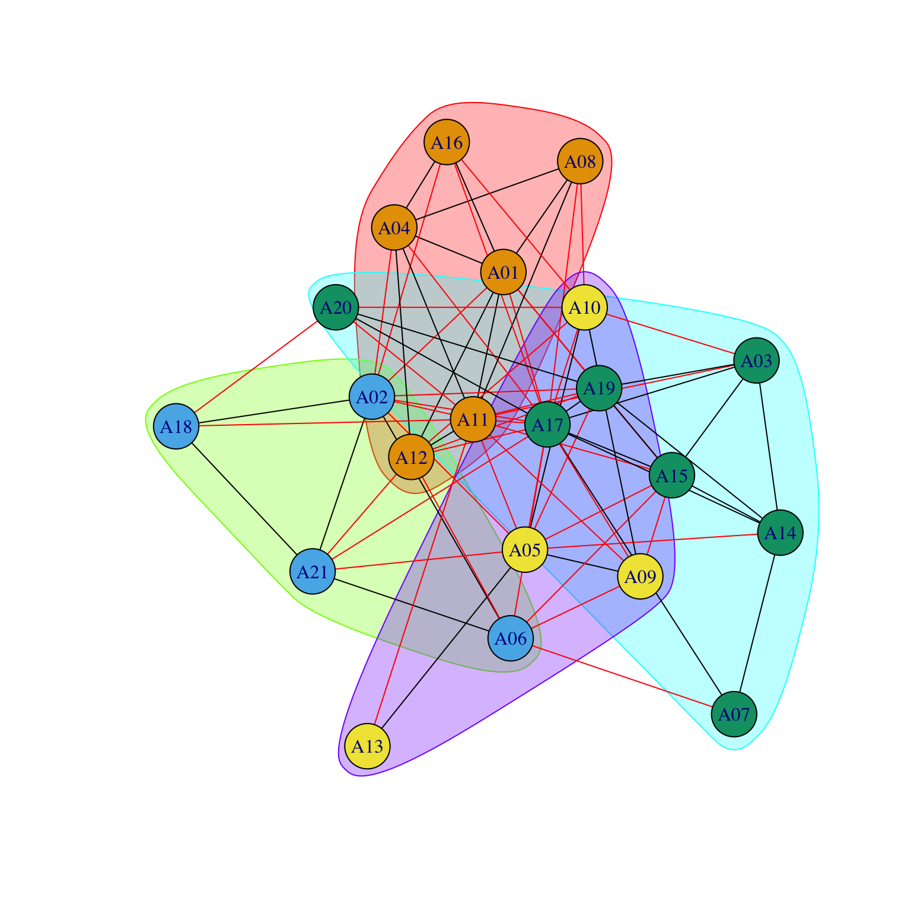
Another method is the so-called FastGreedy:
CluFastGreedy<-cluster_fast_greedy(
Friends,
merges = TRUE,
modularity = TRUE,
membership = TRUE,
weights = NULL
)Results are not the same, but are quite similar.
CluFastGreedy$membership [1] 3 3 4 3 1 2 4 3 1 1 1 2 1 4 4 3 4 1 4 1 2plot(CluFastGreedy,Friends,layout=coord)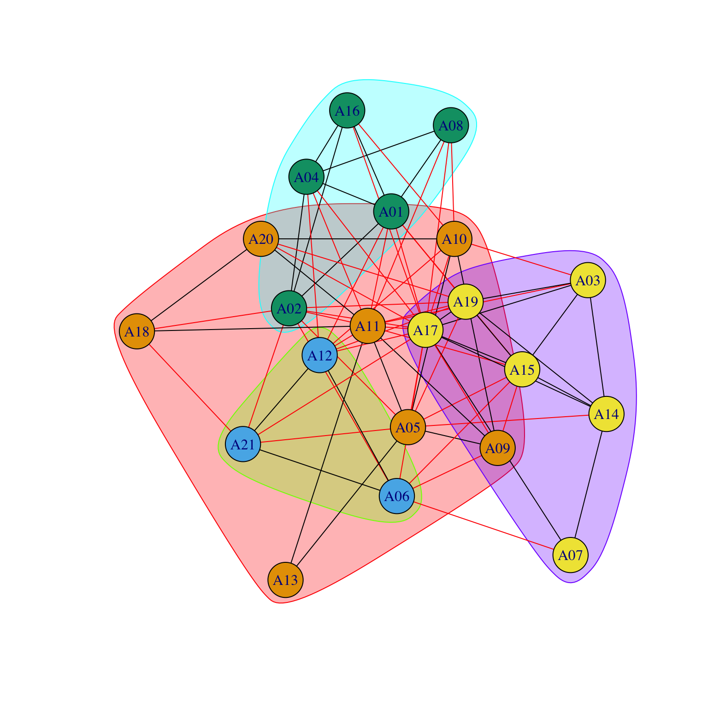
Being a hierarchical method, we can visualize a dendogram:
plot_dendrogram(CluFastGreedy)Bridge detection algos:
#Bridge Detection
#Girvan Newman (edge betweenness)
CLuGirvan<-cluster_edge_betweenness(
Friends,
weights = NULL,
directed = FALSE, # Note that this works also fro directed networks
edge.betweenness = TRUE,
merges = TRUE,
bridges = TRUE,
modularity = TRUE,
membership = TRUE
)In this case, the communities created are different:
CLuGirvan$membership [1] 1 1 1 1 1 2 3 1 1 1 1 1 4 5 1 1 1 6 1 1 7plot(CLuGirvan,Friends,layout=coord)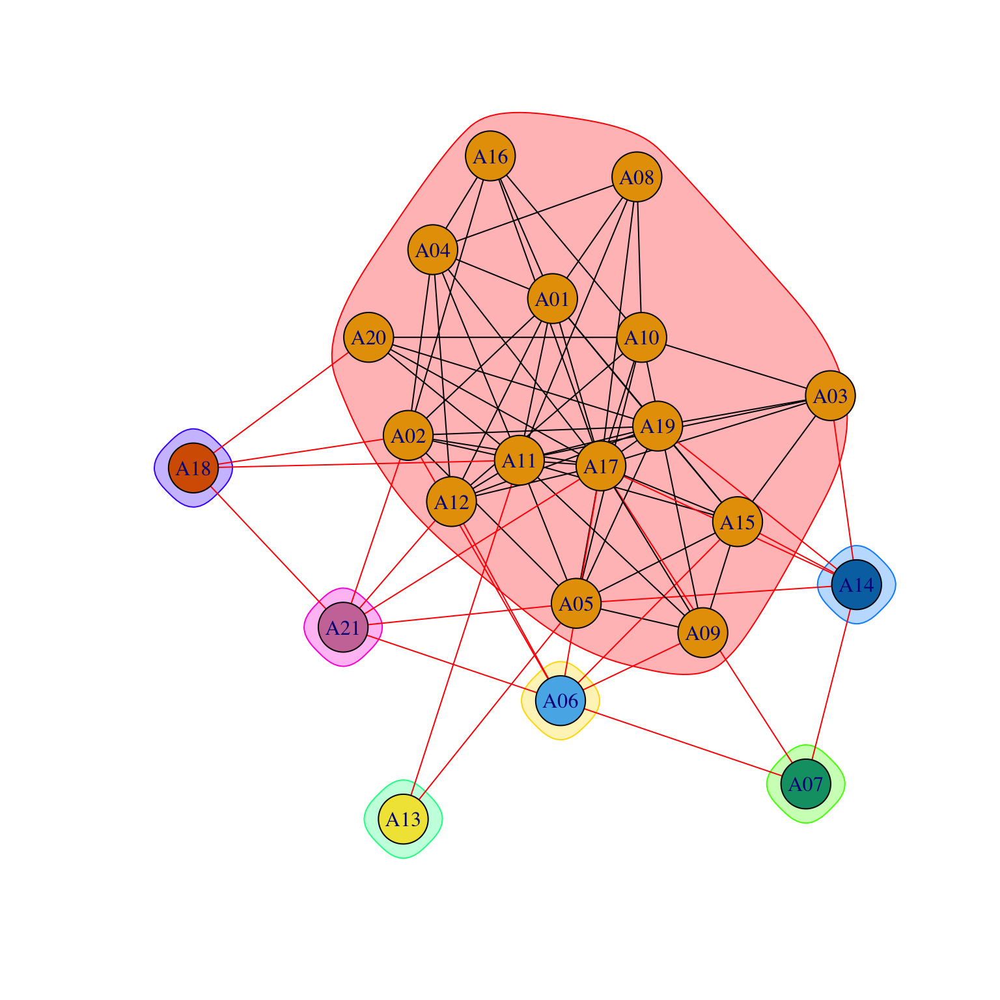
This happens because we are indeed looking at a different way to look at a community.
Percolation algos:
CluLabelProp<-cluster_label_prop(Friends, weights = NULL, initial = NULL, fixed = NULL)
plot(CluLabelProp,Friends,layout=coord)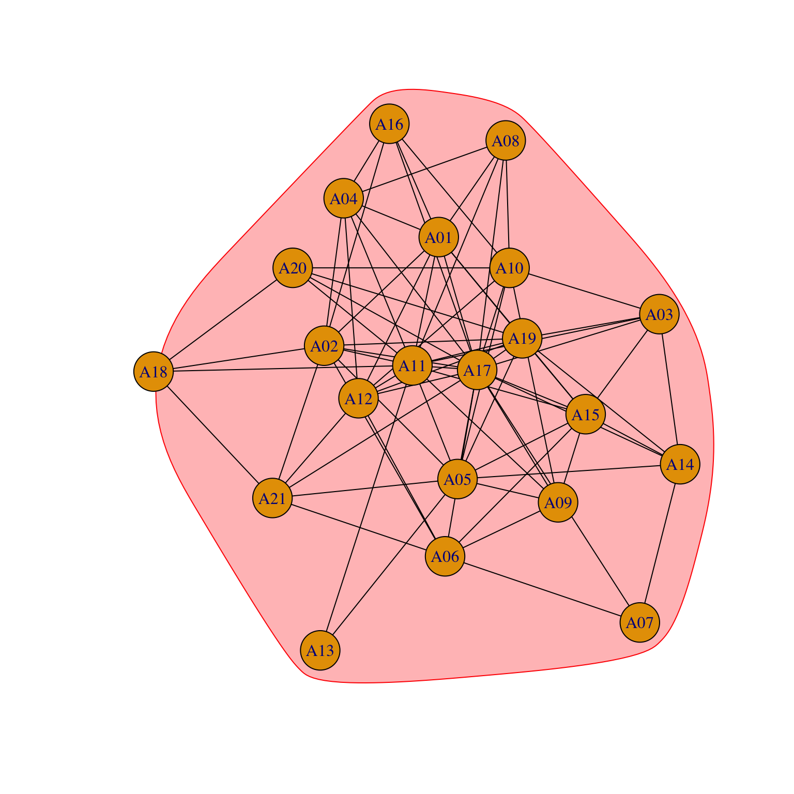
However, in this case the optimization brings an undesired result: in this case, we have that the optimal label propagation results in having a single label.
Inferential statistics for complete networks
We will see now how we can run regression analysis and have significance assessments when dealing in situations in which predictors or dependent variables are networks.
The fact that our nodes are part of a network creates a fundamental problem: we know that our variables are not independent, thus creating a need to develop different tools to perform significance tests to obtain p-values. In other words, we wish to test specific hypothesis: this means that we need to use either correlation or regressions.
What happens when we have networks as variables?
We have two cases:
- We have a non-network variable as outcome of a network problem: networks are the independent variable.
- The non-network variable is the antecedent of a network process: the network variable is seen as a dependent variable.
Level of analysis
- Dyadic level: assign a score to every pair of nodes (e.g.: we are studying geodesic distances between nodes).
- Friendship: is used to predict similarity in outcomes (e.g. due to contagion); we wish to compute a score and assign it to another variable.
- Physical proximity: in this case, we measure proximity to predict friendship, due to opportunities to interact. We have a non-network variable predicting a network variable.
- Node level: assign a score to every node (e.g.: centrality, betweenness, how many friends the node has). We are operating at a monadic level.
- Burnout: if interaction capabilities are saturated, a subject might deplete its resources and end up under-performing.
- Extra-version: can be used to predict number of friends, which is the degree of a given node.
- Group or network level: analyse the network as a whole (network density, core-peripheriness).
- In this case, we will have a score regarding the whole network. However, we can conceptualize sub-networks in which to apply this kind of aggregate measurement.
- Density of trust network: can be used to predict a team performance, because trust simplifies coordination.
- Machiavellian leadership: we can use a model of leadership to predict network centralization, assuming that different classes of leaders yields different levels of centralization.
Statistical testing at group level
Do you need a specialized network-friendly methodology or can we apply the usual techniques?
We could run a regression without thinking too much; however, the problem emerges emerges when assessing whether the results are significant or not. While ordinary regression techniques will do just fine in most cases, we need to think about sampling theory, which underlies all regression theoretical underpinnings.
We need a way to extract a random set of independent observations from a population. However, in the case of networks, we do not have neither independent observations and mostly we do not even have samples.
If we have a biased sample, or if we have measured the whole population, it does not make sense to use the classical test.
Often the networks of interest, especially at a group level, have small , which creates more problem from a statistical perspective per se. Moreover, classical techniques might be heavily affected by outliers (common in networks) and influential points. Note that all these characteristic are not caused by bad data, but are intrinsic to the problems of interest.
We do not have a proper sample (and if we did, it would still be quite small) we need to consider an alternative way to test significance.
Permutation or randomization test
We could reassign in a random way the correlation score given to specific element of the network: for example, if we are trying to measure the performance of project teams, we are assigning each team a score. We could then take the set of ratings and assign each one of them to a random team.
This way we obtain a random variable, by design.
The next question is then to ask which proportion of permutations would have led to at least a correlation as large as the one obtained. If this proportion is high, then the observed score is not that unusual and it can be due to chance alone. The fact that they are independent does not imply that the correlation is 0, so this method can produce a useful significance statistic.
The general idea is that we want to compare the observed correlation against the distribution of correlations that one could obtain if the two variables were in fact independent of each other.
Advantages:
- Works on the whole population.
- Works for small sample sizes.
- No-normality assumptions for the variable distribution.
In R we can use xUCINET function xCorrelation.
Statistical tests at the node level
What are the special challenges in testing hypotheses at the node level?
There are a lot of situations in which people ignore the fact that they are dealing with a network and therefore they will apply classical statistical techniques such as OLS.
However, we are dealing with the same issues as before:
- Small sample sizes.
- There might be outliers.
- The data are not a sample at all.
It is then prudent to use a permutation-based p-value rather than the classical ones.
xCorrelationto correlate two node-level variables.xRegressionto perform a linear regression.
We still have to deal with another very important problem: network auto-correlation. An example might be contagion dynamics: there is a degree of contagion in burnout, because I interact with people who are feeling exhausted and overwhelmed, the more I start feeling the same way. There is then a feedback of information.
Network autocorrelation
The basic idea is to add an autoregressive coefficient to the standard regression equation:
represents the effect that the other nodes values on the dependent variable () have on node as a result of their network relations to each other, which is captured by the matrix . It acts as an autoregressive coefficient, which allows us to represent the feedback of informations and its effect on the network. The size of such an effect is expressed by .
- : could be representing
- The strength of the direct tie between and ,
- The level of structural equivalence between both nodes, or the geodesic distance between and .
xAutoRegression computes a simple auto-regression model.
Statistical testing at the dyad level
The dyad level analysis are the most difficult to deal with, because our data are in the form of matrices. This means that both distance and interaction are valued and undirected matrices, which no standard statistics package will understand.
A first solution might be to vectorize the data as a sized vector. However, these values are not independent observations, since they represent the observations that all involve node : this implies that any peculiarity of will affect the values of every dyad involving it. As this was not enough, there are myriad other sources of interdependence among dyads in network data.
We can solve the interdependency problem by using the QAP, which consists in running a permutation based regression on vectorized data
Quadratic Assignment Problem
- We compute the test statistic (a correlation in our case) between our two observed variables (distance and frequency of interaction).
- We permute the data in a special way, correlate the permuted data, and repeat, times.
- We count the proportion smaller or equal (if we are expecting a negative correlation, larger or equal if we are expecting a positive correlation) to the observed correlation.
This proportion works as our p-value. For a two-tailed test, we simply take the absolute value of the correlations and count the number greater than the absolute value of the observed correlation.
How are permutation are performed?
What is special about QAP is the way the permutations are done.
As an example:
- We have collected data on the distance among people’s offices () and the amount of interaction ().
- Both are matrices.
- We now permute the rows and the associated columns ( stays fixed, because doing otherwise would not provide additional gains).
- Rows and columns move together: this just relabels the nodes, without changing the characteristics of the network, regardless of the fact that and have been relocated in the matrix.
All structural features and dependencies of the original network are preserved by this permutation, even those which are not considered in the analysis and are not known.
All structural features or dependencies are controlled for automatically, even ones we are unaware of.
xQAPCorrelation perform QAP correlations on dyadic data.
QAP regressions
QAP correlation by definition is only bivariate: we need to use xQAPRegression, which is the same as standard multiple regression with p-values computed by a QAP permutation test.
There are a number of ways to compute this:
- Y-permutation approach:
- Run the regression on the observed data.
- Permute the variable as in QAP correlation, re-run the regression and record the regression coefficients.
- We do this thousands of times and count up the proportion of times that the permutation coefficient is as extreme as the one we are observing.
- Double semi-partialing method:
- Run the regression on the observed data ( regressed on ).
- We start running a regression to predict using and (the other covariates). This way I get the predicted values, .
- We then calculate the residual matrix, , which we will call . This variable is X with effects of W and Z removed from it. Now, we repeatedly permute the rows and columns of and regress Y on W, Z and the permuted , keeping track of the t-statistics (I.e., the coefficient divided by the standard error for the coefficient). The p-value for the coefficient on X is given by the proportion.
Network inference in R
We wish to perform a classic correlation analysis between centralization and performance across 18 teams.
M18Centrz<-c(0.59, 0.83, 0.60, 0.45, 0.52, 0.62, 0.64, 0.00, 0.43, 0.44,
0.76, 0.50, 0.65, 0.68, 0.48, 0.52, 0.80, 0.10)
M18Perf<-c(4, 1, 5, 4, 3, 8, 2, 5, 5, 4, 6, 7, 6, 4, 7, 4, 6, 1)We could compute a standard correlation statistic:
cor(M18Centrz,M18Perf)[1] 0.1311454cor.test(M18Centrz,M18Perf)
Pearson's product-moment correlation
data: M18Centrz and M18Perf
t = 0.52915, df = 16, p-value = 0.604
alternative hypothesis: true correlation is not equal to 0
95 percent confidence interval:
-0.3576211 0.5635128
sample estimates:
cor
0.1311454 We can conclude that the correlation is positive, but not significant. Note that we have a small sample of not independent statistical units. To compute a network specific correlation:
par(mfrow = c(1,2))
xCorrelation(M18Centrz,M18Perf, NPERM=5000) Value
NumberOfCases 18.000000000
ValidCases_VEC1 18.000000000
ValidCases_VEC2 18.000000000
ValidCases_Both 18.000000000
CorrCoeff 0.131145360
ClassicSign_2tailed 0.603964787
Mean_Perm -0.003784357
SD_Perm 0.245314222
Min_Perm -0.776033700
Max_Perm 0.804213695
AsSmall 0.711600000
AsLarge 0.288400000
AsExtreme 0.606000000
NumberOfPermutations 5000.000000000The most important result of the list is AsExtreme, which tells us the probability that the result from the permuted vectors is as extreme as the one we observe. Note also that the correlation value is the same we got earlier; the main difference belongs to the way in which significance is computed.
par(mfrow = c(1, 3))
Age15<-c(29, 72, 23, 51, 49, 61, 48, 68, 38, 46, 31, 63, 62, 59, 26)
hist(Age15)
Consc15<-c(0.1, 5.5, 3.1, 2.3, 3.8, 9.3, 7.0, 0.7, 5.5, 0.8, 6.2, 3.1, 1.5, 5.6, 2.7)
hist(Consc15)
Burnout15<- c(2.55, 6.80, 5.00, 6.19, 3.00, 3.84, 3.42, 8.31, 5.41, 6.58, 4.74, 7.14, 6.43, 3.18, 2.83)
hist(Burnout15)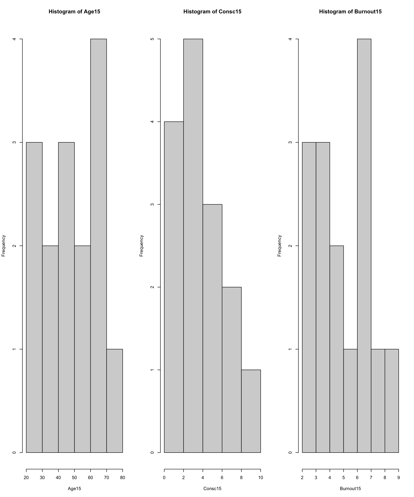
Comm15<-matrix(c(0,1,0,1,0, 1,1,0,0,0, 0,0,0,0,0,
1,0,0,1,0, 1,0,1,0,0, 0,0,0,0,0,
0,0,0,1,0, 0,0,1,1,0, 0,0,0,0,0,
1,1,1,0,1, 1,0,0,0,0, 0,0,0,0,0,
0,0,0,1,0, 0,0,1,0,0, 0,0,0,0,0,
1,1,0,1,0, 0,0,0,0,0, 0,0,0,0,0,
1,0,0,0,0, 0,0,0,0,0, 0,0,0,0,1,
0,1,1,0,1, 0,0,0,0,0, 0,0,0,0,1,
0,0,1,0,0, 0,0,0,0,0, 1,0,1,0,0,
0,0,0,0,0, 0,0,0,0,0, 0,0,1,1,0,
0,0,0,0,0, 0,0,0,1,0, 0,1,1,0,0,
0,0,0,0,0, 0,0,0,0,0, 1,0,0,1,0,
0,0,0,0,0, 0,0,0,1,1, 1,0,0,0,0,
0,0,0,0,0, 0,0,0,0,1, 0,1,0,0,0,
0,0,0,0,0, 0,1,1,0,0, 0,0,0,0,0),15,15)gplot(Comm15, gmode="graph")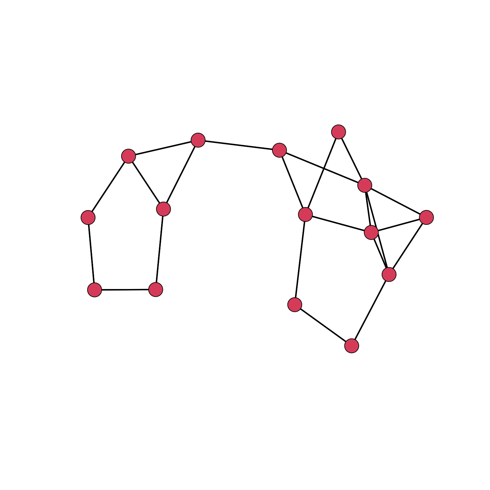
Degr15<-rowSums(Comm15)To call the regression function, beware that:
- The regressors need to be passed as a data frame.
- The needs to be a vector.
X15<-data.frame(Age15,Consc15,Degr15)
xRegression(Burnout15,X15,NPERM=5000) # NPERM>1000 is advisable.$Model
Value
NumberOfCases 15.00000
NValidCases_DV 15.00000
NValidCases_IV.Age15 15.00000
NValidCases_IV.Consc15 15.00000
NValidCases_IV.Degr15 15.00000
NValidCasesAll 15.00000
RSquared 0.48869
AdjustedRSquared 0.34924
FValue 3.50441
DF1 3.00000
DF2 11.00000
Significance 0.05303
NumberOfPermutations 5000.00000
$Variables
Coeff StErr t_value Classic_Sign Mean_Perm SD_Perm AsSmall
(Intercept) 1.70298 1.78308 0.95508 0.36006 5.03682 2.14685 0.0616
Age15 0.06421 0.02536 2.53190 0.02788 0.00038 0.03152 0.9798
Consc15 -0.24450 0.15633 -1.56399 0.14611 0.00034 0.18993 0.1052
Degr15 0.39188 0.42826 0.91504 0.37979 -0.00969 0.52508 0.7694
AsLarge AsExtreme
(Intercept) 0.9384 0.0616
Age15 0.0202 0.9990
Consc15 0.8948 1.0016
Degr15 0.2306 1.0122
Classic significance value based on assumption of independence of cases.Classic_Sign is the classic p-values; we need to compare it with the measures we obtain with the permutation process. The relevant ones are the one either AsSmall or AsLarge : we can see that the degree of significance differs heavily from the ones we obtain with the standard approach.
xQAPCorrelation(Padgett_FlorentineFamilies$Marriage,Padgett_FlorentineFamilies$Business,NPERM = 10000)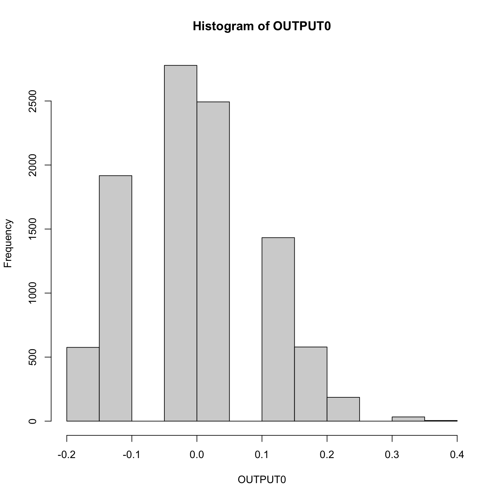
Value
NumberOfNodes 16.000000000000000
NumberOfCases 240.000000000000000
ValidCases_NET1 240.000000000000000
ValidCases_NET2 240.000000000000000
ValidCases_Both 240.000000000000000
CorrCoef 0.371867872080548
ClassicSign_2tailed 0.000000002756827
Mean_Perm -0.000229881957286
SD_Perm 0.093622468073011
Min_Perm -0.169030850945704
Max_Perm 0.371867872080548
AsSmall 0.999800000000000
AsLarge 0.000300000000000
AsExtreme 0.000300000000000
NumberOfPermutations 10000.000000000000000To perform a regression, we need to transform the regressors variables into lists.
MATRIX1<-matrix(c(0,4,2,3, 3,0,4,1, 4,8,0,2, 6,2,6,0),4,4)
MATRIX2<-matrix(c(0,1,2,1, 3,0,3,7, 4,7,0,2, 5,2,2,0),4,4)
MATRIX3<-matrix(c(0,4,5,3, 2,0,2,8, 4,4,0,2, 3,5,3,0),4,4)
LIST2<-list(MATRIX2,MATRIX3)
RESULTS1<-xQAPRegression(MATRIX1,LIST2,NPERM=1000)
$Model
Value
NumberOfNodes 4.00000
NumberOfCases 12.00000
NValidCases_DV 12.00000
NValidCases_IV.X1 12.00000
NValidCases_IV.X2 12.00000
NValidCasesAll 12.00000
RSquared 0.40662
AdjustedRSquared 0.27476
FValue 3.08368
DF1 2.00000
DF2 9.00000
Significance 0.09550
NumberOfPermutations 1000.00000
$Variables
Stand_Coeff Coeff StErr t_value [Sign*] Mean_Perm SD_Perm AsSmall
0.00000 4.66096 1.30201 3.57983 0.00593 0.49312 1.28978 0.956
X1 0.59238 0.57998 0.28150 2.06030 0.06945 0.03594 1.09379 1.000
X2 -0.62258 -0.74557 0.34432 -2.16533 0.05856 -0.04352 1.62418 0.133
AsLarge AsExtreme
0.044 0.044
X1 0.049 0.076
X2 0.867 0.174
Sign* = classic significance value based on assumption of independence of cases. Not to be used.RESULTS1$Model
$Model$NumberOfNodes
[1] 4
$Model$NumberOfCases
[1] 12
$Model$NValidCases_DV
[1] 12
$Model$NValidCases_IV
X1 X2
12 12
$Model$NValidCasesAll
[1] 12
$Model$RSquared
[1] 0.4066206
$Model$AdjustedRSquared
[1] 0.2747586
$Model$FValue
[1] 3.083681
$Model$DF1
[1] 2
$Model$DF2
[1] 9
$Model$Significance
[1] 0.09549837
$Model$NumberOfPermutations
[1] 1000
$MP
OLS Network Model
Residuals:
0% 25% 50% 75% 100%
-2.32977438 -1.12137389 -0.04865028 0.94223409 2.41579371
Coefficients:
Estimate Pr(<=b) Pr(>=b) Pr(>=|b|)
(intercept) 4.6609589 0.956 0.044 0.044
x1 0.5799758 1.000 0.049 0.076
x2 -0.7455681 0.133 0.867 0.174
Residual standard error: 1.746 on 9 degrees of freedom
Multiple R-squared: 0.4066 Adjusted R-squared: 0.2748
F-statistic: 3.084 on 2 and 9 degrees of freedom, p-value: 0.0955
Test Diagnostics:
Null Hypothesis: qapspp
Replications: 1000
Coefficient Distribution Summary:
(intercept) x1 x2
Min -0.99364 -2.28594 -2.77901
1stQ -0.45304 -0.58587 -1.99455
Median 0.06583 -0.30842 -0.04374
Mean 0.49312 0.03594 -0.04352
3rdQ 1.73611 0.52927 1.11625
Max 3.57983 2.06030 3.47175
$Variables
Stand_Coeff Coeff StErr t_value [Sign*] Mean_Perm SD_Perm
0.0000000 4.6609589 1.3020068 3.579827 0.005932359 0.49312275 1.289782
X1 0.5923831 0.5799758 0.2815009 2.060298 0.069446606 0.03594367 1.093791
X2 -0.6225816 -0.7455681 0.3443211 -2.165328 0.058557298 -0.04352445 1.624178
AsSmall AsLarge AsExtreme
0.956 0.044 0.044
X1 1.000 0.049 0.076
X2 0.133 0.867 0.174In this case, we are interested in the Sign* as our significance. The method can be changed by calling the method argument inside the function call; as a default, it uses the semi-partialling method to compute the permutations.
Systemic risk
Can be defined as the risk that the financial system breaks down; it is important because it often has disastrous effects on the real economy and GDP.
Interconnections between different players causes this risk as an endogenous component of complex system; interactions are usually not taken into account, causing therefore models to fail completely and to not be able to predict accurately the outcome of a systemic shock.
- Financial markets as interacting systems.
- Systemic risk as an emergent phenomenon.
- Interactions between banks can be modelled through networks.
Interconnections might be relevant to both regulators and individual investors (e.g.: indirect exposition to unforeseen risks).
How are exogenous shocks amplified by endogenous dynamics?
Interbank networks and their properties
Banks are connected through mortgages, capital and interbank loans; these kind of networks are complex and usually multi-layered, with multiple networks stacked on top of each others and linked through different types of exposures. These exposures can be aggregated to some extent, even though this can cause loss of information.
Most literature dealt with static networks with a single layer, which represent a snapshot of interbank exposures at a given time. This was caused by lack of information (e.g.: links between banks and other non-regulated entities). Studying these networks allows us to discover stylized facts which expose similarities even between the banking systems of different countries.
The information we have are:
- Balance sheet
- Tier 1 capital
- Liquid/illiquid assets
The size distribution of the total bank assets is heavily skewed and can be approximated through a power law: a heterogeneous, heavy tailed distribution tells us that we have either very big or very small banks. If we observe the distribution of interbank exposures we can visualize that their size is also heavily skewed and can modelled through a power law. These two facts are mostly related: bigger banks have the most interbank exposure.
Analysing this structure as a network, we can visualize the degree distribution: it also is quite heterogeneous compared to a random graph (Erdös-Réyni), which means that the average degree is not a proxy for the degree of the network nodes. Despite the absence of the scale-free property, we can still see that the degree distribution is heavily skewed.
Other important facts:
- The network is quite sparse: we have a very low density network.
- The number of hubs (nodes with more than a hundred connections) is instead quite high.
- 89% of the links in the system regards only the top 5% of the nodes: a few banks are heavily connected to most links in the system.
- It is a disassortative network (with negative assortativity): this can enhance the diversification of each network component (where diversification is the number of counter parties).
- We also have large local clustering; this connection creates an enhanced systemic default risk.
- Being this a real networks built over a long period of time, different types of links coexists.
These properties are present in most interbank networks.
Core-periphery network
A core-periphery network has a core of highly interconnected nodes and a periphery of banks that are not highly connected between them, but are connected to the core; this core intermediates between peripheral banks.
To summarize:
- We have heavy-tailed degree distributions (presence of hubs).
- Even if it is not clear whether we have a power-law or not here, we still have the relevant characteristic of a real network.
- Disassortativity.
- High average clustering (counter party risk externalities).
- A documented core-periphery structure.
- We compare the network with an ideal core-periphery network by looking to all the possible combinations of nodes assignment and then we should compare their adjacency matrices and compute a distance between them; the optimal partition minimises this distance, which works as an error score.
- However, over fitting might be an issue here.
The banks at the core are the biggest and most connected: they are certainly also of systemic importance in the network. However, looking at the size is often not enough, even if looking at the size has a good correlation.
Models of shock propagation
In this case we take the network as given and we apply mechanic rules which model how banks react to losses; this provides insights on the outcomes of a shock.
The first things to consider is the balance sheet.
We have:
- Assets:
- Interbank assets.
- External assets.
- Liabilities:
- Interbank liabilities
- External liabilities
- Equity
Insolvency is usually considered a proxy for default; even though it is not technically correct, it is however a fundamental critical issue in a shock scenario.
The assets of one institution corresponds to the liabilities of another one: this creates a systemic network between them. Losses of a bank corresponds to a reduction of assets of another one, which causes shocks to propagate.
Default contagion
This is a cascade model: in this case, losses are propagated only after default. This means that the devaluation of assets has either value 1 or 0: it is a linear threshold model.
This model tries to identify when a giant component of vulnerable banks emerges in a network: it is characterized by the fact that a single default has effect on the whole component and all the other banks.
Distress contagion
Credit quality deterioration can however affect interbank connections even before default: stress therefore propagate before the default of the borrower, because of this effect which causes the credit rating and thus the assets value to deteriorate and even be subjected to haircuts.
Real network dynamics usually are somewhere in between.
Imagine that we have a discrete time dynamic: shocks arrive at period 1 and we are looking at each period how shocks are propagating. We can then iterate the balance sheet identity, considering the progressive equity loss of each bank. is also the leverage, which is the contribution of towards towards the exposure and tells us how important this exposure is in relation to its equity. It is then a parameter that can be tuned to properly model the severity of the contagion.
We can model a matrix of interbank leverage:
- is the exposure of towards .
- is the equity of .
The endogenous amplification of shocks depends on the largest eigenvalue of . It is computed at network level.
It is a centrality metric, similar to the eigenvector centrality.
Leverage is basically investing borrowed money: it amplifies shocks.
It is highly related to risk: a 1% asset devaluation, due to leverage, translates into a % devaluation of equity.
Diversification can be bad, because it can lead to a wider propagation of shocks, caused by the wider exposures existing between banks.
Ranking banks: impact and vulnerabilty
The most impactful banks are also the most vulnerable, which is the worst combination. Among these there are also small banks: size not always correlate to the impact of an institution to the system. This can be revealed by performing stress tests to each element of a network, to understand the systemic perfection. There is an obvious correlation between size and impact, but this is not always true.
Contagion due to overlapping portfolios
Banks are also connected indirectly through their investment portfolios.
Stress can propagate from one banks to others with common assets through prices: this is a non-contractual, indirect connection. Being exposed to the same risk can cause the following dynamics: a liquidation of assets of a insolvent institution can affect thought the downward pressure put to price the balance sheet and solvency of another institution. This can be used to model such dynamics as fire-sales, which can force liquidation, default and thus a de-leveraging spiral.
Generational propagation
A mathematical model of this dynamic can be devised through a tree of branching processes. We can have then generational defaults: one bankrupted bank can cause other banks to fail; global cascades occur with non-zero probability if .
Among its implications: the system is stable if leverage is below a critical threshold.
When we reach a high level of diversification we have a robust yet fragile system: even though the system can resist shocks, when this happens the whole system can collapse quickly as the shocks propagate really fast.
Combination of contagion mechanisms
We should also consider that in real scenarios contagions are often combined and therefore interact with each other, causing a bigger, wider effect. Moreover, we need to consider multiple agents and different sectors: not only banks, but also hedge funds, insurers and all institutions exposed to the financial sector.
Summary
- Network effects can be sizeable: losses might be amplified wildly.
- DebtRank: accounting for credit quality deterioration.
- Overlapping portfolios: stress propagates also without direct connections between banks.
- Multi-layers: the interaction between layers matters.
Exponential random graph models and stochastic actors oriented models
We wish to understand how a network comes to be as an effect of social or natural forces: real networks are not random, therefore we need a model to study cooperative or antagonistic forces.
- Exponential random graph models (ERGMs or p-models).
- Cross-sectional data.
- How the network that we are observing came to be, as the result of a combination of social forces?
- Stochastic Actor Oriented Models (SAOM) and Siena (Simulation Investigation for Empirical Network Analysis).
- In this case we wish to understand how a network changes over time.
- Longitudinal data.
- Which social forces lead from one observed network to another?
ERGMs
ERGMs model an observed network as the long-term outcome of a set of social process/mechanism/forces acting simultaneously on the ties of a network.
We can imagine different forces, depending on the subject at hand. As (undirected network) examples that determine a friendship network might be: overall tendency to build or refrain to build friendship ties or build friendships with people with similar characteristics.
Implicitly we are assuming that there are a set of underlying mechanisms that act as forces that shapes a network; we need to rely on sociological theory to find a concrete explanation. To understand their specific role, we need to isolate them to study their effect and tendency, net from all the tendencies of the model.
We always compare a real network to what would happen by chance: for example, when trying to study the effect of homophily on a network creation and structure, which is the tendency for ties to occur among those similar to each other, we need to take into account alternative explanations and control for other network characteristics.
Our parameters are:
- Each disposition social force is represented by a parameter :
- A higher positive value for the parameter indicates that the tendency is stronger.
- A zero value indicates it is not important in shaping the network.
- A negative value indicates a tendency in the opposite direction.
Each of these tendencies can be related to counts of specific network properties in the observed network which indicates how specific tendencies will be captured in the ERGM.
The sign of the effect depends on the count of a given characteristics with respect to random change:
- Higher than random chance yields a positive sign.
- Equal to random chance yields a null parameter.
- Less than random change yields a negative sign.
Types of effect
- Baseline tendency to build a tie :
- Positive: preference to build a tie
- Null: equal preference to build/not build a tie
- Negative: Preference not to form a tie.
- Network property measured: number of ties (density).
- Propensity to build a tie depending on the number of ties with other nodes :
- Positive: preference to build a tie when nodes in dyad have many other ties (centralization).
- Null: no difference in preference to build a tie depending on the other ties.
- Negative: preference to build a tie when nodes in dyad have few other ties (decentralization).
- Network property measured: 2-stars, alternating stars, or variants of this such as the level of centralization,
- Propensity to triadic closure :
- Positive: preference for ties between nodes who have common connections.
- Null: no difference for ties between nodes who have and have not common connections.
- Negative: preference for ties between nodes who have no common connections.
- Network property measured: number of closed triads.
- Differences in propensity to choose nodes based on nodal attributes (e.g. male/female) :
- Positive: preference to build ties with nodes with specific nodal characteristics (e.g. male).
- Null: no difference in preference fo a ties to nodes with specific nodal characteristics over others.
- Negative: preference to build a tie to nod with nodal characteristics (e.g female).
- Network property measured: number of ties involving node with specific characteristics, or difference in average degree for node with specific characteristic.
- Differences in propensity to choose nodes who are similar/different on nodal attributes (e.g. gender) :
- Positive: Preference to build ties with nodes with same nodal characteristic.
- Null: No difference in preference for a ties to nodes with same or opposite nodal characteristics.
- Negative: Preference to build a tie to nod with opposite nodal characteristics.
- Network property measured: Number of homophilous ties (level of homophily).
- Differences in propensity to build a ties between nodes who are linked by another tie (e.g distance) :
- Positive: Preference for a tie between nodes who are connected by another type of tie
- Null: No difference in preference for a tie between nodes who are/are not connected by another type of tie.
- Negative: Preference for a tie between nodes who are NOT connected by another type of tie
- Network property measured: number of multiplex ties.
Example: toy model
We will consider a model with three structural network effects:
- Edges
- 2-stars
- Triangles
And two idiosyncratic effects:
- Differential propensity based on gender
- Homophily Based on Gender
The observed variable is the network and we wish to understand how it has been created. We need to account that the observed network should be considered as the combined outcome of a set of tie-generating processes which jointly have led to a specific network structure. QAP accounts for all possible effects, even those who are not known; ERGMs help controlling for structural (and other relevant) tendencies when studying a specific effect.
ERGMs can help us disentangle the importance of different social mechanisms.
Maximum likelihood estimations for ERGMs
How are parameters values generated?
They are created with a version of a maximum likelihood procedure:
We wish to maximize this function: our objective is to find the value for the set of parameters () that will maximize the probability of observing the graph we did maximize the value of .
Because of this complex dependencies, finding the optimal combination across the set of parameters in a ERGM is not a closed form solution; a simulation-based algorithm is used to approximate the ML estimates. However this is computationally expensive, therefore we cannot compute all the simulations: we need to find an algorithm that allows us to start from some random and find a optimal solution.
We generate likely networks that would come about when a specific set of tendencies is at work.
When this process converges towards a stable distribution, the resulting sample of networks will be representative of networks generated by a model with the specified parameters: in this case, the approach used is a Markov chain approach.
Markov chain approach
At each time step, starting from a random network with nodes, we apply the specific parameters values on selected dyads; this is performed many times: the probability of generating a tie in that dyad is the result of the parameter values being used and the current surrounding of the dyad. This sequential process in which a tie decision is solely based on the current structure of the network (we therefore have a Markov process).
Over time this process will start generating independent networks that follow the selected rules: this way we create the denominator of the ML function. The numerator is selected as an hyperparameter and thus we are able to compute the estimates of every coefficient: to approximate ML estimators we need to search for the set of parameter values that generate networks that are similar to our observed network (with regard to the properties for the select parameters in the model).
If this procedure succeed, networks that are similar to our observed network will emerge.
This means that the values selected are the (unique) approximate values for the ML estimates.
If in the end of this process the average of each property for the simulated networks is very close to the corresponding value for the observed network: however, convergence will not always be reached and it is fundamental to check this in detail.
Appropriate parameter selection is fundamental to obtain convergence.
Parameter selection
- Control for alternative explanations which are embodied in specific parameters. We need to count the right forces.
- We want to achieve convergence: some implementations are better than others.
Goodness of fit
We need to understand if the generated network is able to approximate correctly the observed network. When we generate them, we wish them to be close not only to those parameters included in the model, but also also with respect other statistics not explicitly accounted for in the model.
For simulated we can now compute other configurational effects and statistics and compare these average numbers to their corresponding values in the observed data. If the values of these properties are close enough, the model deemed adequate, otherwise we will need to consider alternative or additional effects.
ERGMs in R
We will use the following network:
ASNR_Fig15x1$ProjectInfo
$ProjectInfo$ProjectName
[1] "ASNR_Fig15x1"
$ProjectInfo$GeneralDescription
[1] "This is a toy dataset among 14 people used in Chapter 15 of Borgatti, Everett, Johnson and Agneessens (2022) for running ERGMs. (See Figure 15.1)"
$ProjectInfo$AttributesDescription
[1] "Gender: gender of person"
$ProjectInfo$NetworksDescription
[1] "Network 1 - Network A" "Network 2 - Network B" "Network 3 - Network C"
$ProjectInfo$References
[1] "Borgatti, S., Everett, M., Johnson, J. and Agneessens, F. (2022). Analyzing Social Networks with R. Sage"
$Attributes
Gender
a01 0
a02 0
a03 0
a04 1
a05 0
a06 0
a07 0
a08 1
a09 1
a10 1
a11 1
a12 1
a13 1
a14 0
$NetworkInfo
Name Mode Directed Values
1 Network A A FALSE Binary
2 Network B A FALSE Binary
3 Network C A FALSE Binary
$`Network A`
a01 a02 a03 a04 a05 a06 a07 a08 a09 a10 a11 a12 a13 a14
a01 0 1 1 1 0 0 0 0 0 0 0 0 0 0
a02 1 0 1 1 1 0 0 0 0 0 0 0 0 0
a03 1 1 0 1 0 0 0 0 0 0 0 0 0 0
a04 1 1 1 0 1 0 0 0 1 1 0 0 0 0
a05 0 1 0 1 0 1 1 1 0 0 0 0 0 0
a06 0 0 0 0 1 0 1 1 0 0 0 0 0 0
a07 0 0 0 0 1 1 0 1 0 0 0 0 0 1
a08 0 0 0 0 1 1 1 0 0 0 0 0 0 1
a09 0 0 0 1 0 0 0 0 0 1 0 1 1 0
a10 0 0 0 1 0 0 0 0 1 0 1 1 1 0
a11 0 0 0 0 0 0 0 0 0 1 0 1 1 1
a12 0 0 0 0 0 0 0 0 1 1 1 0 1 0
a13 0 0 0 0 0 0 0 0 1 1 1 1 0 1
a14 0 0 0 0 0 0 1 1 0 0 1 0 1 0
$`Network B`
a01 a02 a03 a04 a05 a06 a07 a08 a09 a10 a11 a12 a13 a14
a01 0 0 0 0 0 0 0 1 0 0 0 0 0 0
a02 0 0 0 0 0 0 0 1 0 0 0 0 0 0
a03 0 0 0 1 0 0 0 0 0 0 0 0 0 0
a04 0 0 1 0 0 0 0 1 0 0 0 0 0 0
a05 0 0 0 0 0 0 0 0 0 0 0 0 0 0
a06 0 0 0 0 0 0 1 0 0 0 0 0 0 0
a07 0 0 0 0 0 1 0 0 0 0 0 0 1 0
a08 1 1 0 1 0 0 0 0 1 0 1 1 1 0
a09 0 0 0 0 0 0 0 1 0 1 0 0 0 1
a10 0 0 0 0 0 0 0 0 1 0 1 0 0 0
a11 0 0 0 0 0 0 0 1 0 1 0 0 0 0
a12 0 0 0 0 0 0 0 1 0 0 0 0 1 0
a13 0 0 0 0 0 0 1 1 0 0 0 1 0 0
a14 0 0 0 0 0 0 0 0 1 0 0 0 0 0
$`Network C`
a01 a02 a03 a04 a05 a06 a07 a08 a09 a10 a11 a12 a13 a14
a01 0 0 0 1 0 0 0 0 1 1 0 0 0 0
a02 0 0 1 1 0 0 0 0 1 1 0 0 0 0
a03 0 1 0 0 0 0 0 1 1 0 0 0 0 0
a04 1 1 0 0 1 0 0 0 0 0 0 0 0 0
a05 0 0 0 1 0 1 0 0 1 0 0 1 0 0
a06 0 0 0 0 1 0 0 0 0 1 1 0 1 0
a07 0 0 0 0 0 0 0 0 0 0 1 1 1 0
a08 0 0 1 0 0 0 0 0 1 0 0 0 0 0
a09 1 1 1 0 1 0 0 1 0 0 0 0 0 0
a10 1 1 0 0 0 1 0 0 0 0 0 0 0 0
a11 0 0 0 0 0 1 1 0 0 0 0 0 0 1
a12 0 0 0 0 1 0 1 0 0 0 0 0 0 1
a13 0 0 0 0 0 1 1 0 0 0 0 0 0 1
a14 0 0 0 0 0 0 0 0 0 0 1 1 1 0The ergm package needs a network object to perform its computations.
E14A <- as.network(ASNR_Fig15x1$`Network A`,directed=F)
E14_ATTR <- ASNR_Fig15x1$Attributes
E14_ATTR Gender
a01 0
a02 0
a03 0
a04 1
a05 0
a06 0
a07 0
a08 1
a09 1
a10 1
a11 1
a12 1
a13 1
a14 0With the following command we will attach the gender attribute to the network.
E14A %v% "Gender" <- E14_ATTR$GenderA simple plot:
gplot(
E14A,
gmode="graph",
displaylabels=T,
vertex.col=E14A %v% "Gender"*2
)We are now ready to compute a model with only structural variables:
set.seed(516)
M.E14A.1<-ergm(E14A ~ edges + kstar(2) + triangle)Starting maximum pseudolikelihood estimation (MPLE):Obtaining the responsible dyads.Evaluating the predictor and response matrix.Maximizing the pseudolikelihood.Finished MPLE.Starting Monte Carlo maximum likelihood estimation (MCMLE):Iteration 1 of at most 60:Warning: 'glpk' selected as the solver, but package 'Rglpk' is not available;
falling back to 'lpSolveAPI'. This should be fine unless the sample size and/or
the number of parameters is very big.Optimizing with step length 1.0000.The log-likelihood improved by 2.4179.Estimating equations are not within tolerance region.Iteration 2 of at most 60:Optimizing with step length 1.0000.The log-likelihood improved by 1.1313.Estimating equations are not within tolerance region.Iteration 3 of at most 60:Optimizing with step length 1.0000.The log-likelihood improved by 0.1487.Estimating equations are not within tolerance region.Iteration 4 of at most 60:Optimizing with step length 1.0000.The log-likelihood improved by 0.0103.Convergence test p-value: 0.0101. Not converged with 99% confidence; increasing sample size.
Iteration 5 of at most 60:
Optimizing with step length 1.0000.
The log-likelihood improved by 0.2067.
Estimating equations are not within tolerance region.
Iteration 6 of at most 60:
Optimizing with step length 1.0000.
The log-likelihood improved by 0.1379.
Estimating equations are not within tolerance region.
Iteration 7 of at most 60:
Optimizing with step length 1.0000.
The log-likelihood improved by 0.2112.
Estimating equations are not within tolerance region.
Estimating equations did not move closer to tolerance region more than 1 time(s) in 4 steps; increasing sample size.
Iteration 8 of at most 60:
Optimizing with step length 1.0000.
The log-likelihood improved by 0.1387.
Estimating equations are not within tolerance region.
Iteration 9 of at most 60:
Optimizing with step length 1.0000.
The log-likelihood improved by 0.0234.
Convergence test p-value: 0.3428. Not converged with 99% confidence; increasing sample size.
Iteration 10 of at most 60:
Optimizing with step length 1.0000.
The log-likelihood improved by 0.0025.
Convergence test p-value: 0.0353. Not converged with 99% confidence; increasing sample size.
Iteration 11 of at most 60:
Optimizing with step length 1.0000.
The log-likelihood improved by 0.0391.
Convergence test p-value: 0.0009. Converged with 99% confidence.
Finished MCMLE.
Evaluating log-likelihood at the estimate. Fitting the dyad-independent submodel...
Bridging between the dyad-independent submodel and the full model...
Setting up bridge sampling...
Using 16 bridges: 1 2 3 4 5 6 7 8 9 10 11 12 13 14 15 16 .
Bridging finished.
This model was fit using MCMC. To examine model diagnostics and check
for degeneracy, use the mcmc.diagnostics() function.summary(M.E14A.1)Call:
ergm(formula = E14A ~ edges + kstar(2) + triangle)
Monte Carlo Maximum Likelihood Results:
Estimate Std. Error MCMC % z value Pr(>|z|)
edges 8.9931 3.7798 0 2.379 0.01735 *
kstar2 -1.6571 0.5256 0 -3.153 0.00162 **
triangle 1.7035 0.2840 0 5.998 < 0.0001 ***
---
Signif. codes: 0 '***' 0.001 '**' 0.01 '*' 0.05 '.' 0.1 ' ' 1
Null Deviance: 126.15 on 91 degrees of freedom
Residual Deviance: 80.62 on 88 degrees of freedom
AIC: 86.62 BIC: 94.15 (Smaller is better. MC Std. Err. = 0.6533)set.seed(738)
M.E14A.2<-ergm(E14A ~ edges + nodefactor("Gender",levels=2) + nodematch("Gender"))Starting maximum pseudolikelihood estimation (MPLE):Obtaining the responsible dyads.Evaluating the predictor and response matrix.Maximizing the pseudolikelihood.Finished MPLE.Evaluating log-likelihood at the estimate. summary(M.E14A.2)Call:
ergm(formula = E14A ~ edges + nodefactor("Gender", levels = 2) +
nodematch("Gender"))
Maximum Likelihood Results:
Estimate Std. Error MCMC % z value Pr(>|z|)
edges -1.6514 0.4731 0 -3.490 0.000482 ***
nodefactor.Gender.1 0.2904 0.3134 0 0.927 0.354085
nodematch.Gender 1.1659 0.4731 0 2.464 0.013732 *
---
Signif. codes: 0 '***' 0.001 '**' 0.01 '*' 0.05 '.' 0.1 ' ' 1
Null Deviance: 126.2 on 91 degrees of freedom
Residual Deviance: 106.6 on 88 degrees of freedom
AIC: 112.6 BIC: 120.1 (Smaller is better. MC Std. Err. = 0)set.seed(343)
M.E14A.3<-ergm(
E14A ~ edges + kstar(2) + triangle + nodefactor("Gender",levels=2) + nodematch("Gender"))Starting maximum pseudolikelihood estimation (MPLE):Obtaining the responsible dyads.Evaluating the predictor and response matrix.Maximizing the pseudolikelihood.Finished MPLE.Starting Monte Carlo maximum likelihood estimation (MCMLE):Iteration 1 of at most 60:Optimizing with step length 0.9970.The log-likelihood improved by 2.1464.Estimating equations are not within tolerance region.Iteration 2 of at most 60:Optimizing with step length 1.0000.The log-likelihood improved by 0.6540.Estimating equations are not within tolerance region.Iteration 3 of at most 60:Optimizing with step length 1.0000.The log-likelihood improved by 0.1568.Estimating equations are not within tolerance region.Iteration 4 of at most 60:Optimizing with step length 1.0000.The log-likelihood improved by 0.0662.Convergence test p-value: 0.9681. Not converged with 99% confidence; increasing sample size.
Iteration 5 of at most 60:
Optimizing with step length 1.0000.
The log-likelihood improved by 0.1694.
Estimating equations are not within tolerance region.
Iteration 6 of at most 60:
Optimizing with step length 1.0000.
The log-likelihood improved by 0.2931.
Estimating equations are not within tolerance region.
Estimating equations did not move closer to tolerance region more than 1 time(s) in 4 steps; increasing sample size.
Iteration 7 of at most 60:
Optimizing with step length 1.0000.
The log-likelihood improved by 0.1828.
Estimating equations are not within tolerance region.
Iteration 8 of at most 60:
Optimizing with step length 1.0000.
The log-likelihood improved by 0.0597.
Convergence test p-value: 0.4143. Not converged with 99% confidence; increasing sample size.
Iteration 9 of at most 60:
Optimizing with step length 1.0000.
The log-likelihood improved by 0.0048.
Convergence test p-value: 0.1533. Not converged with 99% confidence; increasing sample size.
Iteration 10 of at most 60:
Optimizing with step length 1.0000.
The log-likelihood improved by 0.0089.
Convergence test p-value: 0.0220. Not converged with 99% confidence; increasing sample size.
Iteration 11 of at most 60:
Optimizing with step length 1.0000.
The log-likelihood improved by 0.0260.
Convergence test p-value: 0.0005. Converged with 99% confidence.
Finished MCMLE.
Evaluating log-likelihood at the estimate. Fitting the dyad-independent submodel...
Bridging between the dyad-independent submodel and the full model...
Setting up bridge sampling...
Using 16 bridges: 1 2 3 4 5 6 7 8 9 10 11 12 13 14 15 16 .
Bridging finished.
This model was fit using MCMC. To examine model diagnostics and check
for degeneracy, use the mcmc.diagnostics() function.summary(M.E14A.3)Call:
ergm(formula = E14A ~ edges + kstar(2) + triangle + nodefactor("Gender",
levels = 2) + nodematch("Gender"))
Monte Carlo Maximum Likelihood Results:
Estimate Std. Error MCMC % z value Pr(>|z|)
edges 10.6220 4.8860 0 2.174 0.02971 *
kstar2 -2.0941 0.7393 0 -2.832 0.00462 **
triangle 1.6298 0.2765 0 5.894 < 0.0001 ***
nodefactor.Gender.1 1.4967 0.9452 0 1.584 0.11329
nodematch.Gender 0.4762 0.2592 0 1.837 0.06616 .
---
Signif. codes: 0 '***' 0.001 '**' 0.01 '*' 0.05 '.' 0.1 ' ' 1
Null Deviance: 126.15 on 91 degrees of freedom
Residual Deviance: 72.57 on 86 degrees of freedom
AIC: 82.57 BIC: 95.12 (Smaller is better. MC Std. Err. = 0.2437)Footnotes
Taking the log of both sides and solving for .↩︎
While in relative terms the size of the giant components remains negligible at , in absolute terms there is a significant jump in the size of the largest component.↩︎
This is a power law; the number of components decreases very fast.↩︎
Its tentative models lead to the concept of scale-free networks.↩︎
This is an important aspect that needs to be checked.↩︎
Scale of medium size and extent.↩︎